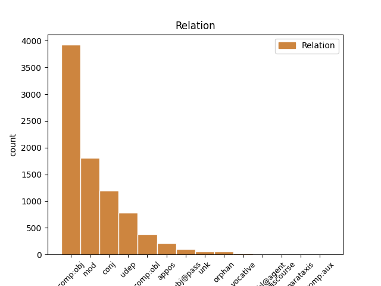
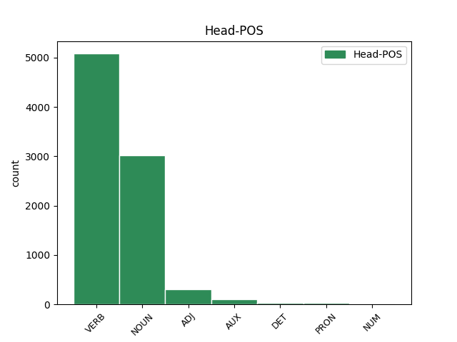
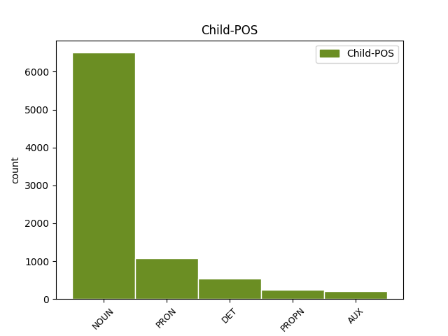

Distribution of features within this leaf



Agreement Rules sorted by frequency.
- When the dependent token is the direct object complements(comp:obj) of the head token, and the head token is VERB and the dependent token is NOUN.
1 Když _ _ _ _ 0 _ _ _
2 oslava _ _ _ _ 0 _ _ _
3 skončila _ _ _ _ 0 _ _ _
4 a _ _ _ _ 0 _ _ _
5 s _ _ _ _ 0 _ _ _
6 nadcházejícím _ _ _ _ 0 _ _ _
7 víkendem _ _ _ _ 0 _ _ _
8 se _ _ _ _ 0 _ _ _
9 budova _ _ _ _ 0 _ _ _
10 vyprázdnila _ _ _ _ 0 _ _ _
11 , _ _ _ _ 0 _ _ _
12 vyndal vyndat VERB VpMS----R-AA--- Animacy=Anim|Gender=Masc|Number=Sing|Polarity=Pos|Tense=Past|VerbForm=Part|Voice=Act 0 _ _ _
13 otec _ _ _ _ 0 _ _ _
14 ze _ _ _ _ 0 _ _ _
15 svého _ _ _ _ 0 _ _ _
16 svazku _ _ _ _ 0 _ _ _
17 jeden _ _ _ _ 0 _ _ _
18 nenápadný _ _ _ _ 0 _ _ _
19 klíček klíček NOUN NNIS4-----A---- Animacy=Inan|Case=Acc|Gender=Masc|Number=Sing|Polarity=Pos 12 comp:obj _ _
20 a _ _ _ _ 0 _ _ _
21 řekl _ _ _ _ 0 _ _ _
22 : _ _ _ _ 0 _ _ _
1 Ale _ _ _ _ 0 _ _ _
2 potom _ _ _ _ 0 _ _ _
3 si _ _ _ _ 0 _ _ _
4 koupíme _ _ _ _ 0 _ _ _
5 láhev láhev NOUN NNFS4-----A---- Case=Acc|Gender=Fem|Number=Sing|Polarity=Pos 0 _ _ _
6 kořalky kořalka NOUN NNFS2-----A---- Case=Gen|Gender=Fem|Number=Sing|Polarity=Pos 5 mod _ _
7 a _ _ _ _ 0 _ _ _
8 půjdeme _ _ _ _ 0 _ _ _
9 za _ _ _ _ 0 _ _ _
10 ženskými _ _ _ _ 0 _ _ _
11 , _ _ _ _ 0 _ _ _
12 " _ _ _ _ 0 _ _ _
13 navrhoval _ _ _ _ 0 _ _ _
14 druhý _ _ _ _ 0 _ _ _
15 . _ _ _ _ 0 _ _ _
1 Jsou _ _ _ _ 0 _ _ _
2 to _ _ _ _ 0 _ _ _
3 jen _ _ _ _ 0 _ _ _
4 klamy klam NOUN NNIP1-----A---- Animacy=Inan|Case=Nom|Gender=Masc|Number=Plur|Polarity=Pos 0 _ _ _
5 a _ _ _ _ 0 _ _ _
6 přeludy přelud NOUN NNIP1-----A---- Animacy=Inan|Case=Nom|Gender=Masc|Number=Plur|Polarity=Pos 4 conj _ SpaceAfter=No
7 , _ _ _ _ 0 _ _ _
8 které _ _ _ _ 0 _ _ _
9 člověka _ _ _ _ 0 _ _ _
10 mohou _ _ _ _ 0 _ _ _
11 svést _ _ _ _ 0 _ _ _
12 na _ _ _ _ 0 _ _ _
13 špatnou _ _ _ _ 0 _ _ _
14 cestu _ _ _ _ 0 _ _ _
15 . _ _ _ _ 0 _ _ _
1 Lékař _ _ _ _ 0 _ _ _
2 ho on PRON PHMS4--3------- Animacy=Anim|Case=Acc|Gender=Masc|Number=Sing|Person=3|PronType=Prs|Variant=Short 4 comp:obj _ _
3 pečlivě _ _ _ _ 0 _ _ _
4 prohlédl prohlédnout VERB VpMS----R-AA--1 Animacy=Anim|Gender=Masc|Number=Sing|Polarity=Pos|Tense=Past|VerbForm=Part|Voice=Act 0 _ _ _
5 . _ _ _ _ 0 _ _ _
1 Dva _ _ _ _ 0 _ _ _
2 přátelé _ _ _ _ 0 _ _ _
3 celý _ _ _ _ 0 _ _ _
4 týden _ _ _ _ 0 _ _ _
5 tvrdě _ _ _ _ 0 _ _ _
6 pracovali _ _ _ _ 0 _ _ _
7 , _ _ _ _ 0 _ _ _
8 a _ _ _ _ 0 _ _ _
9 protože _ _ _ _ 0 _ _ _
10 byl být VERB VpIS----R-AA--- Animacy=Inan|Gender=Masc|Number=Sing|Polarity=Pos|Tense=Past|VerbForm=Part|Voice=Act 0 _ _ _
11 pátek pátek NOUN NNIS1-----A---- Animacy=Inan|Case=Nom|Gender=Masc|Number=Sing|Polarity=Pos 10 udep _ _
12 večer _ _ _ _ 0 _ _ _
13 , _ _ _ _ 0 _ _ _
14 chtěli _ _ _ _ 0 _ _ _
15 si _ _ _ _ 0 _ _ _
16 užít _ _ _ _ 0 _ _ _
17 pár _ _ _ _ 0 _ _ _
18 hezkých _ _ _ _ 0 _ _ _
19 hodin _ _ _ _ 0 _ _ _
20 . _ _ _ _ 0 _ _ _
1 Ceremoniář ceremoniář NOUN NNMS1-----A---- Animacy=Anim|Case=Nom|Gender=Masc|Number=Sing|Polarity=Pos 0 _ _ _
2 , _ _ _ _ 0 _ _ _
3 muž muž NOUN NNMS1-----A---- Animacy=Anim|Case=Nom|Gender=Masc|Number=Sing|Polarity=Pos 1 appos _ _
4 ze _ _ _ _ 0 _ _ _
5 staré _ _ _ _ 0 _ _ _
6 školy _ _ _ _ 0 _ _ _
7 , _ _ _ _ 0 _ _ _
8 si _ _ _ _ 0 _ _ _
9 vyčistil _ _ _ _ 0 _ _ _
10 monokl _ _ _ _ 0 _ _ _
11 a _ _ _ _ 0 _ _ _
12 posunkem _ _ _ _ 0 _ _ _
13 odmítl _ _ _ _ 0 _ _ _
14 . _ _ _ _ 0 _ _ _
1 Došel _ _ _ _ 0 _ _ _
2 jsem _ _ _ _ 0 _ _ _
3 k _ _ _ _ 0 _ _ _
4 němu _ _ _ _ 0 _ _ _
5 a _ _ _ _ 0 _ _ _
6 zeptal zeptat VERB VpMS----R-AA--- Animacy=Anim|Gender=Masc|Number=Sing|Polarity=Pos|Tense=Past|VerbForm=Part|Voice=Act 0 _ _ _
7 se _ _ _ _ 0 _ _ _
8 ho on PRON PHMS2--3------- Animacy=Anim|Case=Gen|Gender=Masc|Number=Sing|Person=3|PronType=Prs|Variant=Short 6 comp:obl _ SpaceAfter=No
9 , _ _ _ _ 0 _ _ _
10 jestli _ _ _ _ 0 _ _ _
11 mi _ _ _ _ 0 _ _ _
12 výfuk _ _ _ _ 0 _ _ _
13 opraví _ _ _ _ 0 _ _ _
14 . _ _ _ _ 0 _ _ _
1 V _ _ _ _ 0 _ _ _
2 den _ _ _ _ 0 _ _ _
3 pětašedesátých _ _ _ _ 0 _ _ _
4 narozenin _ _ _ _ 0 _ _ _
5 se _ _ _ _ 0 _ _ _
6 stáhl _ _ _ _ 0 _ _ _
7 z _ _ _ _ 0 _ _ _
8 každodenního _ _ _ _ 0 _ _ _
9 provozu _ _ _ _ 0 _ _ _
10 firmy _ _ _ _ 0 _ _ _
11 a _ _ _ _ 0 _ _ _
12 při _ _ _ _ 0 _ _ _
13 důstojné _ _ _ _ 0 _ _ _
14 oslavě _ _ _ _ 0 _ _ _
15 symbolicky _ _ _ _ 0 _ _ _
16 předal předat VERB VpMS----R-AA--- Animacy=Anim|Gender=Masc|Number=Sing|Polarity=Pos|Tense=Past|VerbForm=Part|Voice=Act 0 _ _ _
17 svému _ _ _ _ 0 _ _ _
18 synovi syn NOUN NNMS3-----A---- Animacy=Anim|Case=Dat|Gender=Masc|Number=Sing|Polarity=Pos 16 comp:obl _ _
19 klíč _ _ _ _ 0 _ _ _
20 k _ _ _ _ 0 _ _ _
21 vedení _ _ _ _ 0 _ _ _
22 podniku _ _ _ _ 0 _ _ _
23 . _ _ _ _ 0 _ _ _
1 Krejčí _ _ _ _ 0 _ _ _
2 vyndal _ _ _ _ 0 _ _ _
3 malý _ _ _ _ 0 _ _ _
4 černý _ _ _ _ 0 _ _ _
5 blok _ _ _ _ 0 _ _ _
6 , _ _ _ _ 0 _ _ _
7 ve _ _ _ _ 0 _ _ _
8 kterém _ _ _ _ 0 _ _ _
9 měl _ _ _ _ 0 _ _ _
10 zaznamenány _ _ _ _ 0 _ _ _
11 všechny _ _ _ _ 0 _ _ _
12 hříchy _ _ _ _ 0 _ _ _
13 , _ _ _ _ 0 _ _ _
14 kterých který DET P4IP2---------- Animacy=Inan|Case=Gen|Gender=Masc|Number=Plur|PronType=Int,Rel 16 comp:obj _ _
15 se _ _ _ _ 0 _ _ _
16 dopustil dopustit VERB VpMS----R-AA--- Animacy=Anim|Gender=Masc|Number=Sing|Polarity=Pos|Tense=Past|VerbForm=Part|Voice=Act 0 _ _ _
17 od _ _ _ _ 0 _ _ _
18 posledního _ _ _ _ 0 _ _ _
19 Jom _ _ _ _ 0 _ _ _
20 kippur _ _ _ _ 0 _ _ _
21 . _ _ _ _ 0 _ _ _
1 Tento _ _ _ _ 0 _ _ _
2 pohled _ _ _ _ 0 _ _ _
3 se _ _ _ _ 0 _ _ _
4 mu _ _ _ _ 0 _ _ _
5 vryl vrýt VERB VpIS----R-AA--- Animacy=Inan|Gender=Masc|Number=Sing|Polarity=Pos|Tense=Past|VerbForm=Part|Voice=Act 0 _ _ _
6 do _ _ _ _ 0 _ _ _
7 paměti _ _ _ _ 0 _ _ _
8 a _ _ _ _ 0 _ _ _
9 on _ _ _ _ 0 _ _ _
10 si _ _ _ _ 0 _ _ _
11 byl být AUX VpMS----R-AA--- Animacy=Anim|Gender=Masc|Number=Sing|Polarity=Pos|Tense=Past|VerbForm=Part|Voice=Act 5 conj _ _
12 jist _ _ _ _ 0 _ _ _
13 , _ _ _ _ 0 _ _ _
14 že _ _ _ _ 0 _ _ _
15 už _ _ _ _ 0 _ _ _
16 ji _ _ _ _ 0 _ _ _
17 ani _ _ _ _ 0 _ _ _
18 žádnou _ _ _ _ 0 _ _ _
19 z _ _ _ _ 0 _ _ _
20 jejích _ _ _ _ 0 _ _ _
21 přítelkyň _ _ _ _ 0 _ _ _
22 nikdy _ _ _ _ 0 _ _ _
23 nenavštíví _ _ _ _ 0 _ _ _
24 . _ _ _ _ 0 _ _ _
1 Po _ _ _ _ 0 _ _ _
2 cestách _ _ _ _ 0 _ _ _
3 plných plný ADJ AANP2----1A---- Case=Gen|Degree=Pos|Gender=Neut|Number=Plur|Polarity=Pos 0 _ _ _
4 nebezpečí nebezpečí NOUN NNNP2-----A---- Case=Gen|Gender=Neut|Number=Plur|Polarity=Pos 3 comp:obj _ _
5 došel _ _ _ _ 0 _ _ _
6 jedné _ _ _ _ 0 _ _ _
7 noci _ _ _ _ 0 _ _ _
8 k _ _ _ _ 0 _ _ _
9 domu _ _ _ _ 0 _ _ _
10 a _ _ _ _ 0 _ _ _
11 zaklepal _ _ _ _ 0 _ _ _
12 na _ _ _ _ 0 _ _ _
13 dveře _ _ _ _ 0 _ _ _
14 . _ _ _ _ 0 _ _ _
1 Spatřil _ _ _ _ 0 _ _ _
2 v _ _ _ _ 0 _ _ _
3 něm _ _ _ _ 0 _ _ _
4 , _ _ _ _ 0 _ _ _
5 jak _ _ _ _ 0 _ _ _
6 se _ _ _ _ 0 _ _ _
7 otevřely otevřít VERB VpFP----R-AA--- Gender=Fem|Number=Plur|Polarity=Pos|Tense=Past|VerbForm=Part|Voice=Act 0 _ _ _
8 dveře dveře NOUN NNFP1-----A---- Case=Nom|Gender=Fem|Number=Plur|Polarity=Pos 7 subj@pass _ _
9 jeho _ _ _ _ 0 _ _ _
10 pokoje _ _ _ _ 0 _ _ _
11 a _ _ _ _ 0 _ _ _
12 jak _ _ _ _ 0 _ _ _
13 se _ _ _ _ 0 _ _ _
14 k _ _ _ _ 0 _ _ _
15 němu _ _ _ _ 0 _ _ _
16 blíží _ _ _ _ 0 _ _ _
17 postava _ _ _ _ 0 _ _ _
18 , _ _ _ _ 0 _ _ _
19 celá _ _ _ _ 0 _ _ _
20 černě _ _ _ _ 0 _ _ _
21 oděná _ _ _ _ 0 _ _ _
22 , _ _ _ _ 0 _ _ _
23 obklopená _ _ _ _ 0 _ _ _
24 září _ _ _ _ 0 _ _ _
25 zlatých _ _ _ _ 0 _ _ _
26 křídel _ _ _ _ 0 _ _ _
27 . _ _ _ _ 0 _ _ _
1 Věčně _ _ _ _ 0 _ _ _
2 pochybujícímu _ _ _ _ 0 _ _ _
3 a _ _ _ _ 0 _ _ _
4 hledajícímu _ _ _ _ 0 _ _ _
5 Tomášovi Tomáš PROPN NNMS3-----A---1 Animacy=Anim|Case=Dat|Gender=Masc|NameType=Giv|Number=Sing|Polarity=Pos 7 comp:obj _ _
6 se _ _ _ _ 0 _ _ _
7 zdál zdát VERB VpIS----R-AA--- Animacy=Inan|Gender=Masc|Number=Sing|Polarity=Pos|Tense=Past|VerbForm=Part|Voice=Act 0 _ _ _
8 sen _ _ _ _ 0 _ _ _
9 : _ _ _ _ 0 _ _ _
1 Ale _ _ _ _ 0 _ _ _
2 jakmile _ _ _ _ 0 _ _ _
3 si _ _ _ _ 0 _ _ _
4 ho _ _ _ _ 0 _ _ _
5 srovnal _ _ _ _ 0 _ _ _
6 na _ _ _ _ 0 _ _ _
7 ramenou _ _ _ _ 0 _ _ _
8 , _ _ _ _ 0 _ _ _
9 měl _ _ _ _ 0 _ _ _
10 pocit _ _ _ _ 0 _ _ _
11 , _ _ _ _ 0 _ _ _
12 jako _ _ _ _ 0 _ _ _
13 by _ _ _ _ 0 _ _ _
14 se _ _ _ _ 0 _ _ _
15 mu on PRON PHMS3--3------- Animacy=Anim|Case=Dat|Gender=Masc|Number=Sing|Person=3|PronType=Prs|Variant=Short 20 udep _ _
16 stále _ _ _ _ 0 _ _ _
17 do _ _ _ _ 0 _ _ _
18 šíje _ _ _ _ 0 _ _ _
19 bolestivě _ _ _ _ 0 _ _ _
20 zarýval zarývat VERB VpIS----R-AA--- Animacy=Inan|Gender=Masc|Number=Sing|Polarity=Pos|Tense=Past|VerbForm=Part|Voice=Act 0 _ _ _
21 trn _ _ _ _ 0 _ _ _
22 . _ _ _ _ 0 _ _ _
1 Jeho _ _ _ _ 0 _ _ _
2 matka _ _ _ _ 0 _ _ _
3 křičela _ _ _ _ 0 _ _ _
4 zkamenělá zkamenělý ADJ AAFS1----1A---- Case=Nom|Degree=Pos|Gender=Fem|Number=Sing|Polarity=Pos 0 _ _ _
5 hrůzou hrůza NOUN NNFS7-----A---- Case=Ins|Gender=Fem|Number=Sing|Polarity=Pos 4 udep _ SpaceAfter=No
6 : _ _ _ _ 0 _ _ _
1 Ale _ _ _ _ 0 _ _ _
2 malé _ _ _ _ 0 _ _ _
3 okno okno NOUN NNNS1-----A---- Case=Nom|Gender=Neut|Number=Sing|Polarity=Pos 4 subj@pass _ _
4 bylo být AUX VpNS----R-AA--- Gender=Neut|Number=Sing|Polarity=Pos|Tense=Past|VerbForm=Part|Voice=Act 0 _ _ _
5 vsazeno _ _ _ _ 0 _ _ _
6 tak _ _ _ _ 0 _ _ _
7 vysoko _ _ _ _ 0 _ _ _
8 , _ _ _ _ 0 _ _ _
9 že _ _ _ _ 0 _ _ _
10 zahlédl _ _ _ _ 0 _ _ _
11 jen _ _ _ _ 0 _ _ _
12 kousek _ _ _ _ 0 _ _ _
13 nebe _ _ _ _ 0 _ _ _
14 . _ _ _ _ 0 _ _ _
1 Potom _ _ _ _ 0 _ _ _
2 vyzkoušel _ _ _ _ 0 _ _ _
3 dlouhý _ _ _ _ 0 _ _ _
4 a _ _ _ _ 0 _ _ _
5 tenký _ _ _ _ 0 _ _ _
6 kříž kříž NOUN NNIS4-----A---- Animacy=Inan|Case=Acc|Gender=Masc|Number=Sing|Polarity=Pos 0 _ _ _
7 , _ _ _ _ 0 _ _ _
8 který _ _ _ _ 0 _ _ _
9 byl být AUX VpIS----R-AA--- Animacy=Inan|Gender=Masc|Number=Sing|Polarity=Pos|Tense=Past|VerbForm=Part|Voice=Act 6 mod _ _
10 sice _ _ _ _ 0 _ _ _
11 lehčí _ _ _ _ 0 _ _ _
12 , _ _ _ _ 0 _ _ _
13 ale _ _ _ _ 0 _ _ _
14 všude _ _ _ _ 0 _ _ _
15 s _ _ _ _ 0 _ _ _
16 ním _ _ _ _ 0 _ _ _
17 neustále _ _ _ _ 0 _ _ _
18 narážel _ _ _ _ 0 _ _ _
19 , _ _ _ _ 0 _ _ _
20 takže _ _ _ _ 0 _ _ _
21 se _ _ _ _ 0 _ _ _
22 cítil _ _ _ _ 0 _ _ _
23 jako _ _ _ _ 0 _ _ _
24 ve _ _ _ _ 0 _ _ _
25 vězení _ _ _ _ 0 _ _ _
26 . _ _ _ _ 0 _ _ _
1 Syn _ _ _ _ 0 _ _ _
2 se _ _ _ _ 0 _ _ _
3 proto _ _ _ _ 0 _ _ _
4 vzdal _ _ _ _ 0 _ _ _
5 veškeré veškerý PRON PLFS2---------- Case=Gen|Gender=Fem|Number=Sing|PronType=Tot 6 mod _ _
6 naděje naděje NOUN NNFS2-----A---- Case=Gen|Gender=Fem|Number=Sing|Polarity=Pos 0 _ _ _
7 , _ _ _ _ 0 _ _ _
8 odešel _ _ _ _ 0 _ _ _
9 pryč _ _ _ _ 0 _ _ _
10 od _ _ _ _ 0 _ _ _
11 otcova _ _ _ _ 0 _ _ _
12 domu _ _ _ _ 0 _ _ _
13 a _ _ _ _ 0 _ _ _
14 už _ _ _ _ 0 _ _ _
15 se _ _ _ _ 0 _ _ _
16 nikdy _ _ _ _ 0 _ _ _
17 nevrátil _ _ _ _ 0 _ _ _
18 . _ _ _ _ 0 _ _ _
1 Potom _ _ _ _ 0 _ _ _
2 vztáhl _ _ _ _ 0 _ _ _
3 ruce _ _ _ _ 0 _ _ _
4 k _ _ _ _ 0 _ _ _
5 obrazu obraz NOUN NNIS3-----A---- Animacy=Inan|Case=Dat|Gender=Masc|Number=Sing|Polarity=Pos 0 _ _ _
6 Pantokratóra Pantokratór PROPN NNMS2-----A---- Animacy=Anim|Case=Gen|Gender=Masc|NameType=Giv|Number=Sing|Polarity=Pos 5 mod _ _
7 Všemohoucího _ _ _ _ 0 _ _ _
8 a _ _ _ _ 0 _ _ _
9 prosil _ _ _ _ 0 _ _ _
10 , _ _ _ _ 0 _ _ _
11 aby _ _ _ _ 0 _ _ _
12 by _ _ _ _ 0 _ _ _
13 mu _ _ _ _ 0 _ _ _
14 seslal _ _ _ _ 0 _ _ _
15 něco _ _ _ _ 0 _ _ _
16 k _ _ _ _ 0 _ _ _
17 jídlu _ _ _ _ 0 _ _ _
18 , _ _ _ _ 0 _ _ _
19 trochu _ _ _ _ 0 _ _ _
20 masa _ _ _ _ 0 _ _ _
21 a _ _ _ _ 0 _ _ _
22 zeleniny _ _ _ _ 0 _ _ _
23 , _ _ _ _ 0 _ _ _
24 chleba _ _ _ _ 0 _ _ _
25 a _ _ _ _ 0 _ _ _
26 sýra _ _ _ _ 0 _ _ _
27 a _ _ _ _ 0 _ _ _
28 pár _ _ _ _ 0 _ _ _
29 oliv _ _ _ _ 0 _ _ _
30 by _ _ _ _ 0 _ _ _
31 velmi _ _ _ _ 0 _ _ _
32 potřeboval _ _ _ _ 0 _ _ _
33 . _ _ _ _ 0 _ _ _
1 V _ _ _ _ 0 _ _ _
2 patrech _ _ _ _ 0 _ _ _
3 je _ _ _ _ 0 _ _ _
4 dnes _ _ _ _ 0 _ _ _
5 celkem _ _ _ _ 0 _ _ _
6 padesát _ _ _ _ 0 _ _ _
7 pokojů _ _ _ _ 0 _ _ _
8 , _ _ _ _ 0 _ _ _
9 většinou _ _ _ _ 0 _ _ _
10 dvou _ _ _ _ 0 _ _ _
11 až _ _ _ _ 0 _ _ _
12 třílůžkových _ _ _ _ 0 _ _ _
13 , _ _ _ _ 0 _ _ _
14 v _ _ _ _ 0 _ _ _
15 prvním _ _ _ _ 0 _ _ _
16 patře patro NOUN NNNS6-----A---1 Case=Loc|Gender=Neut|Number=Sing|Polarity=Pos 0 _ _ _
17 navíc _ _ _ _ 0 _ _ _
18 " _ _ _ _ 0 _ _ _
19 královské _ _ _ _ 0 _ _ _
20 apartmá apartmá NOUN NNNS1-----A---- Case=Nom|Gender=Neut|Number=Sing|Polarity=Pos 16 orphan _ SpaceAfter=No
21 " _ _ _ _ 0 _ _ _
22 , _ _ _ _ 0 _ _ _
23 kde _ _ _ _ 0 _ _ _
24 prý _ _ _ _ 0 _ _ _
25 byl _ _ _ _ 0 _ _ _
26 vždycky _ _ _ _ 0 _ _ _
27 ubytován _ _ _ _ 0 _ _ _
28 král _ _ _ _ 0 _ _ _
29 , _ _ _ _ 0 _ _ _
30 když _ _ _ _ 0 _ _ _
31 tudy _ _ _ _ 0 _ _ _
32 projížděl _ _ _ _ 0 _ _ _
33 . _ _ _ _ 0 _ _ _
1 " _ _ _ _ 0 _ _ _
2 Váš _ _ _ _ 0 _ _ _
3 účet účet NOUN NNIS1-----A---- Animacy=Inan|Case=Nom|Gender=Masc|Number=Sing|Polarity=Pos 8 unk _ SpaceAfter=No
4 , _ _ _ _ 0 _ _ _
5 pane _ _ _ _ 0 _ _ _
6 , _ _ _ _ 0 _ _ _
7 " _ _ _ _ 0 _ _ _
8 řekl říci VERB VpMS----R-AA--- Animacy=Anim|Gender=Masc|Number=Sing|Polarity=Pos|Tense=Past|VerbForm=Part|Voice=Act 0 _ _ _
9 hostitel _ _ _ _ 0 _ _ _
10 , _ _ _ _ 0 _ _ _
11 a _ _ _ _ 0 _ _ _
12 jako _ _ _ _ 0 _ _ _
13 by _ _ _ _ 0 _ _ _
14 tímto _ _ _ _ 0 _ _ _
15 slovem _ _ _ _ 0 _ _ _
16 pronesl _ _ _ _ 0 _ _ _
17 zaklínadlo _ _ _ _ 0 _ _ _
18 , _ _ _ _ 0 _ _ _
19 proměnil _ _ _ _ 0 _ _ _
20 se _ _ _ _ 0 _ _ _
21 jeho _ _ _ _ 0 _ _ _
22 obličej _ _ _ _ 0 _ _ _
23 v _ _ _ _ 0 _ _ _
24 ďábelsky _ _ _ _ 0 _ _ _
25 šeredný _ _ _ _ 0 _ _ _
26 úšklebek _ _ _ _ 0 _ _ _
27 . _ _ _ _ 0 _ _ _
1 Jenže _ _ _ _ 0 _ _ _
2 Valentýna _ _ _ _ 0 _ _ _
3 se _ _ _ _ 0 _ _ _
4 ke _ _ _ _ 0 _ _ _
5 mně _ _ _ _ 0 _ _ _
6 nastěhovala _ _ _ _ 0 _ _ _
7 několik _ _ _ _ 0 _ _ _
8 dní _ _ _ _ 0 _ _ _
9 po _ _ _ _ 0 _ _ _
10 propuštění _ _ _ _ 0 _ _ _
11 z _ _ _ _ 0 _ _ _
12 porodnického _ _ _ _ 0 _ _ _
13 oddělení _ _ _ _ 0 _ _ _
14 i _ _ _ _ 0 _ _ _
15 se _ _ _ _ 0 _ _ _
16 svojí _ _ _ _ 0 _ _ _
17 dcerou _ _ _ _ 0 _ _ _
18 , _ _ _ _ 0 _ _ _
19 již _ _ _ _ 0 _ _ _
20 pojmenovala pojmenovat VERB VpFS----R-AA--- Gender=Fem|Number=Sing|Polarity=Pos|Tense=Past|VerbForm=Part|Voice=Act 0 _ _ _
21 Janička Janička PROPN NNFS1-----A---- Case=Nom|Gender=Fem|NameType=Giv|Number=Sing|Polarity=Pos 20 comp:obl _ SpaceAfter=No
22 . _ _ _ _ 0 _ _ _
1 " _ _ _ _ 0 _ _ _
2 Náš _ _ _ _ 0 _ _ _
3 kamarád _ _ _ _ 0 _ _ _
4 nebyl být AUX VpMS----R-NA--- Animacy=Anim|Gender=Masc|Number=Sing|Polarity=Neg|Tense=Past|VerbForm=Part|Voice=Act 0 _ _ _
5 jen _ _ _ _ 0 _ _ _
6 statečný _ _ _ _ 0 _ _ _
7 , _ _ _ _ 0 _ _ _
8 byl být AUX VpMS----R-AA--- Animacy=Anim|Gender=Masc|Number=Sing|Polarity=Pos|Tense=Past|VerbForm=Part|Voice=Act 4 conj _ _
9 taky _ _ _ _ 0 _ _ _
10 přátelský _ _ _ _ 0 _ _ _
11 a _ _ _ _ 0 _ _ _
12 měl _ _ _ _ 0 _ _ _
13 dobré _ _ _ _ 0 _ _ _
14 srdce _ _ _ _ 0 _ _ _
15 . _ _ _ _ 0 _ _ _
1 Rozhodl _ _ _ _ 0 _ _ _
2 se _ _ _ _ 0 _ _ _
3 tedy _ _ _ _ 0 _ _ _
4 , _ _ _ _ 0 _ _ _
5 že _ _ _ _ 0 _ _ _
6 se _ _ _ _ 0 _ _ _
7 o _ _ _ _ 0 _ _ _
8 svých _ _ _ _ 0 _ _ _
9 pochybnostech _ _ _ _ 0 _ _ _
10 přesvědčí _ _ _ _ 0 _ _ _
11 , _ _ _ _ 0 _ _ _
12 a _ _ _ _ 0 _ _ _
13 poslal _ _ _ _ 0 _ _ _
14 syna _ _ _ _ 0 _ _ _
15 k _ _ _ _ 0 _ _ _
16 jednomu _ _ _ _ 0 _ _ _
17 nesmírně _ _ _ _ 0 _ _ _
18 bohatému _ _ _ _ 0 _ _ _
19 příbuznému _ _ _ _ 0 _ _ _
20 , _ _ _ _ 0 _ _ _
21 který který DET P4MS1---------- Animacy=Anim|Case=Nom|Gender=Masc|Number=Sing|PronType=Int,Rel 22 subj@pass _ _
22 byl být AUX VpMS----R-AA--- Animacy=Anim|Gender=Masc|Number=Sing|Polarity=Pos|Tense=Past|VerbForm=Part|Voice=Act 0 _ _ _
23 v _ _ _ _ 0 _ _ _
24 celé _ _ _ _ 0 _ _ _
25 rodině _ _ _ _ 0 _ _ _
26 považován _ _ _ _ 0 _ _ _
27 za _ _ _ _ 0 _ _ _
28 milovníka _ _ _ _ 0 _ _ _
29 života _ _ _ _ 0 _ _ _
30 . _ _ _ _ 0 _ _ _
1 Veronika _ _ _ _ 0 _ _ _
2 za _ _ _ _ 0 _ _ _
3 ním _ _ _ _ 0 _ _ _
4 mává _ _ _ _ 0 _ _ _
5 , _ _ _ _ 0 _ _ _
6 ale _ _ _ _ 0 _ _ _
7 ještě _ _ _ _ 0 _ _ _
8 než _ _ _ _ 0 _ _ _
9 půjde _ _ _ _ 0 _ _ _
10 dovnitř _ _ _ _ 0 _ _ _
11 , _ _ _ _ 0 _ _ _
12 podívá _ _ _ _ 0 _ _ _
13 se _ _ _ _ 0 _ _ _
14 směrem směr NOUN NNIS7-----A---- Animacy=Inan|Case=Ins|Gender=Masc|Number=Sing|Polarity=Pos 0 _ _ _
15 do _ _ _ _ 0 _ _ _
16 rohu roh NOUN NNIS2-----A---- Animacy=Inan|Case=Gen|Gender=Masc|Number=Sing|Polarity=Pos 14 comp:obj _ _
17 zahrady _ _ _ _ 0 _ _ _
18 . _ _ _ _ 0 _ _ _
1 Kriticky _ _ _ _ 0 _ _ _
2 zkoumal _ _ _ _ 0 _ _ _
3 toho ten DET PDMS4---------- Animacy=Anim|Case=Acc|Gender=Masc|Number=Sing|PronType=Dem 0 _ _ _
4 a _ _ _ _ 0 _ _ _
5 onoho onen DET PDMS4---------- Animacy=Anim|Case=Acc|Gender=Masc|Number=Sing|PronType=Dem 3 conj _ SpaceAfter=No
6 , _ _ _ _ 0 _ _ _
7 ale _ _ _ _ 0 _ _ _
8 pořád _ _ _ _ 0 _ _ _
9 se _ _ _ _ 0 _ _ _
10 mu _ _ _ _ 0 _ _ _
11 něco _ _ _ _ 0 _ _ _
12 nezdálo _ _ _ _ 0 _ _ _
13 , _ _ _ _ 0 _ _ _
14 až _ _ _ _ 0 _ _ _
15 jeho _ _ _ _ 0 _ _ _
16 zrak _ _ _ _ 0 _ _ _
17 padl _ _ _ _ 0 _ _ _
18 na _ _ _ _ 0 _ _ _
19 obrovského _ _ _ _ 0 _ _ _
20 mladíka _ _ _ _ 0 _ _ _
21 . _ _ _ _ 0 _ _ _
1 To ten DET PDNS1---------- Case=Nom|Gender=Neut|Number=Sing|PronType=Dem 3 subj@pass _ _
2 se _ _ _ _ 0 _ _ _
3 doneslo donést VERB VpNS----R-AA--- Gender=Neut|Number=Sing|Polarity=Pos|Tense=Past|VerbForm=Part|Voice=Act 0 _ _ _
4 jeho _ _ _ _ 0 _ _ _
5 matce _ _ _ _ 0 _ _ _
6 , _ _ _ _ 0 _ _ _
7 která _ _ _ _ 0 _ _ _
8 si _ _ _ _ 0 _ _ _
9 jako _ _ _ _ 0 _ _ _
10 lékařka _ _ _ _ 0 _ _ _
11 získala _ _ _ _ 0 _ _ _
12 úctu _ _ _ _ 0 _ _ _
13 i _ _ _ _ 0 _ _ _
14 bohatství _ _ _ _ 0 _ _ _
15 . _ _ _ _ 0 _ _ _
1 Profesor _ _ _ _ 0 _ _ _
2 si _ _ _ _ 0 _ _ _
3 ho _ _ _ _ 0 _ _ _
4 jedním _ _ _ _ 0 _ _ _
5 okem _ _ _ _ 0 _ _ _
6 prohlížel prohlížet VERB VpMS----R-AA--- Animacy=Anim|Gender=Masc|Number=Sing|Polarity=Pos|Tense=Past|VerbForm=Part|Voice=Act 0 _ _ _
7 : _ _ _ _ 0 _ _ _
8 voják voják NOUN NNMS1-----A---- Animacy=Anim|Case=Nom|Gender=Masc|Number=Sing|Polarity=Pos 6 conj _ _
9 základní _ _ _ _ 0 _ _ _
10 služby _ _ _ _ 0 _ _ _
11 , _ _ _ _ 0 _ _ _
12 vrací _ _ _ _ 0 _ _ _
13 se _ _ _ _ 0 _ _ _
14 do _ _ _ _ 0 _ _ _
15 kasáren _ _ _ _ 0 _ _ _
16 , _ _ _ _ 0 _ _ _
17 ujel _ _ _ _ 0 _ _ _
18 mu _ _ _ _ 0 _ _ _
19 autobus _ _ _ _ 0 _ _ _
20 - _ _ _ _ 0 _ _ _
21 odhadoval _ _ _ _ 0 _ _ _
22 mlčky _ _ _ _ 0 _ _ _
23 . _ _ _ _ 0 _ _ _
1 Za _ _ _ _ 0 _ _ _
2 nějakou _ _ _ _ 0 _ _ _
3 dobu _ _ _ _ 0 _ _ _
4 objevili _ _ _ _ 0 _ _ _
5 pupeční _ _ _ _ 0 _ _ _
6 šňůru _ _ _ _ 0 _ _ _
7 , _ _ _ _ 0 _ _ _
8 kterou který DET P4FS7---------- Case=Ins|Gender=Fem|Number=Sing|PronType=Int,Rel 11 udep _ _
9 k _ _ _ _ 0 _ _ _
10 nim _ _ _ _ 0 _ _ _
11 proudila proudit VERB VpFS----R-AA--- Gender=Fem|Number=Sing|Polarity=Pos|Tense=Past|VerbForm=Part|Voice=Act 0 _ _ _
12 výživa _ _ _ _ 0 _ _ _
13 a _ _ _ _ 0 _ _ _
14 velebili _ _ _ _ 0 _ _ _
15 svou _ _ _ _ 0 _ _ _
16 matku _ _ _ _ 0 _ _ _
17 za _ _ _ _ 0 _ _ _
18 to _ _ _ _ 0 _ _ _
19 , _ _ _ _ 0 _ _ _
20 že _ _ _ _ 0 _ _ _
21 se _ _ _ _ 0 _ _ _
22 s _ _ _ _ 0 _ _ _
23 nimi _ _ _ _ 0 _ _ _
24 dělí _ _ _ _ 0 _ _ _
25 o _ _ _ _ 0 _ _ _
26 svůj _ _ _ _ 0 _ _ _
27 život _ _ _ _ 0 _ _ _
28 . _ _ _ _ 0 _ _ _
1 Eduard Eduard PROPN NNMS1-----A---- Animacy=Anim|Case=Nom|Gender=Masc|NameType=Giv|Number=Sing|Polarity=Pos 2 subj@pass _ _
2 byl být AUX VpMS----R-AA--- Animacy=Anim|Gender=Masc|Number=Sing|Polarity=Pos|Tense=Past|VerbForm=Part|Voice=Act 0 _ _ _
3 vzrušen _ _ _ _ 0 _ _ _
4 ! _ _ _ _ 0 _ _ _
1 Co _ _ _ _ 0 _ _ _
2 myslíte _ _ _ _ 0 _ _ _
3 : _ _ _ _ 0 _ _ _
4 když _ _ _ _ 0 _ _ _
5 váš _ _ _ _ 0 _ _ _
6 syn _ _ _ _ 0 _ _ _
7 dostane _ _ _ _ 0 _ _ _
8 horečku _ _ _ _ 0 _ _ _
9 , _ _ _ _ 0 _ _ _
10 mám _ _ _ _ 0 _ _ _
11 dát _ _ _ _ 0 _ _ _
12 léky _ _ _ _ 0 _ _ _
13 jeho _ _ _ _ 0 _ _ _
14 sluhům sluha NOUN NNMP3-----A---- Animacy=Anim|Case=Dat|Gender=Masc|Number=Plur|Polarity=Pos 0 _ _ _
15 , _ _ _ _ 0 _ _ _
16 a _ _ _ _ 0 _ _ _
17 ne _ _ _ _ 0 _ _ _
18 jemu on PRON PPMS3--3------- Animacy=Anim|Case=Dat|Gender=Masc|Number=Sing|Person=3|PronType=Prs 14 conj _ SpaceAfter=No
19 ? _ _ _ _ 0 _ _ _
20 " _ _ _ _ 0 _ _ _
1 Byl _ _ _ _ 0 _ _ _
2 jmenován jmenovaný ADJ VsMS------AP--- Animacy=Anim|Gender=Masc|Number=Sing|Polarity=Pos|Variant=Short|VerbForm=Part|Voice=Pass 0 _ _ _
3 profesorem profesor NOUN NNMS7-----A---- Animacy=Anim|Case=Ins|Gender=Masc|Number=Sing|Polarity=Pos 2 comp:obl@agent _ _
4 a _ _ _ _ 0 _ _ _
5 přednostou _ _ _ _ 0 _ _ _
6 kliniky _ _ _ _ 0 _ _ _
7 . _ _ _ _ 0 _ _ _
1 Cesta _ _ _ _ 0 _ _ _
2 do _ _ _ _ 0 _ _ _
3 Krásné _ _ _ _ 0 _ _ _
4 však _ _ _ _ 0 _ _ _
5 byla být AUX VpFS----R-AA--- Gender=Fem|Number=Sing|Polarity=Pos|Tense=Past|VerbForm=Part|Voice=Act 0 _ _ _
6 posypaná _ _ _ _ 0 _ _ _
7 škvárou škvára NOUN NNFS7-----A---- Case=Ins|Gender=Fem|Number=Sing|Polarity=Pos 5 udep _ SpaceAfter=No
8 , _ _ _ _ 0 _ _ _
9 takže _ _ _ _ 0 _ _ _
10 neklouzala _ _ _ _ 0 _ _ _
11 a _ _ _ _ 0 _ _ _
12 profesor _ _ _ _ 0 _ _ _
13 Havlena _ _ _ _ 0 _ _ _
14 se _ _ _ _ 0 _ _ _
15 na _ _ _ _ 0 _ _ _
16 procházku _ _ _ _ 0 _ _ _
17 doslova _ _ _ _ 0 _ _ _
18 těšil _ _ _ _ 0 _ _ _
19 . _ _ _ _ 0 _ _ _
1 Najednou _ _ _ _ 0 _ _ _
2 se _ _ _ _ 0 _ _ _
3 s _ _ _ _ 0 _ _ _
4 námahou _ _ _ _ 0 _ _ _
5 zvedl _ _ _ _ 0 _ _ _
6 z _ _ _ _ 0 _ _ _
7 křesla _ _ _ _ 0 _ _ _
8 , _ _ _ _ 0 _ _ _
9 aby _ _ _ _ 0 _ _ _
10 by _ _ _ _ 0 _ _ _
11 ukázal _ _ _ _ 0 _ _ _
12 , _ _ _ _ 0 _ _ _
13 jak _ _ _ _ 0 _ _ _
14 jeho _ _ _ _ 0 _ _ _
15 učitel učitel NOUN NNMS1-----A---- Animacy=Anim|Case=Nom|Gender=Masc|Number=Sing|Polarity=Pos 0 _ _ _
16 , _ _ _ _ 0 _ _ _
17 velký _ _ _ _ 0 _ _ _
18 Baalšem _ _ _ _ 0 _ _ _
19 Tov Tov PROPN NNMS1-----A---- Animacy=Anim|Case=Nom|Gender=Masc|NameType=Sur|Number=Sing|Polarity=Pos 15 appos _ SpaceAfter=No
20 , _ _ _ _ 0 _ _ _
21 při _ _ _ _ 0 _ _ _
22 modlení _ _ _ _ 0 _ _ _
23 vždy _ _ _ _ 0 _ _ _
24 poskakoval _ _ _ _ 0 _ _ _
25 , _ _ _ _ 0 _ _ _
26 dokonce _ _ _ _ 0 _ _ _
27 i _ _ _ _ 0 _ _ _
28 tancoval _ _ _ _ 0 _ _ _
29 . _ _ _ _ 0 _ _ _
1 Měl _ _ _ _ 0 _ _ _
2 rád _ _ _ _ 0 _ _ _
3 romány _ _ _ _ 0 _ _ _
4 s _ _ _ _ 0 _ _ _
5 nádechem _ _ _ _ 0 _ _ _
6 dobrodružství _ _ _ _ 0 _ _ _
7 a _ _ _ _ 0 _ _ _
8 spravedlnosti _ _ _ _ 0 _ _ _
9 , _ _ _ _ 0 _ _ _
10 Dumasova _ _ _ _ 0 _ _ _
11 Hraběte _ _ _ _ 0 _ _ _
12 Monte _ _ _ _ 0 _ _ _
13 Christa _ _ _ _ 0 _ _ _
14 nebo _ _ _ _ 0 _ _ _
15 Hugovy _ _ _ _ 0 _ _ _
16 Bídníky _ _ _ _ 0 _ _ _
17 , _ _ _ _ 0 _ _ _
18 Saint _ _ _ _ 0 _ _ _
19 - _ _ _ _ 0 _ _ _
20 Exupéryho _ _ _ _ 0 _ _ _
21 Malého _ _ _ _ 0 _ _ _
22 prince princ NOUN NNMS4-----A---- Animacy=Anim|Case=Acc|Gender=Masc|Number=Sing|Polarity=Pos 0 _ _ _
23 nebo _ _ _ _ 0 _ _ _
24 Kazantzakisova _ _ _ _ 0 _ _ _
25 Řeka Řek PROPN NNMS4-----A---- Animacy=Anim|Case=Acc|Gender=Masc|NameType=Nat|Number=Sing|Polarity=Pos 22 conj _ _
26 Zorbu _ _ _ _ 0 _ _ _
27 . _ _ _ _ 0 _ _ _
1 " _ _ _ _ 0 _ _ _
2 Moje _ _ _ _ 0 _ _ _
3 trápení trápení NOUN NNNS1-----A---- Case=Nom|Gender=Neut|Number=Sing|Polarity=Pos 0 _ _ _
4 , _ _ _ _ 0 _ _ _
5 moje _ _ _ _ 0 _ _ _
6 starosti _ _ _ _ 0 _ _ _
7 , _ _ _ _ 0 _ _ _
8 moje _ _ _ _ 0 _ _ _
9 strasti _ _ _ _ 0 _ _ _
10 , _ _ _ _ 0 _ _ _
11 moje _ _ _ _ 0 _ _ _
12 smutky _ _ _ _ 0 _ _ _
13 - _ _ _ _ 0 _ _ _
14 to ten DET PDNS1---------- Case=Nom|Gender=Neut|Number=Sing|PronType=Dem 3 appos _ _
15 všechno _ _ _ _ 0 _ _ _
16 mě _ _ _ _ 0 _ _ _
17 tak _ _ _ _ 0 _ _ _
18 tísní _ _ _ _ 0 _ _ _
19 a _ _ _ _ 0 _ _ _
20 tíží _ _ _ _ 0 _ _ _
21 , _ _ _ _ 0 _ _ _
22 že _ _ _ _ 0 _ _ _
23 už _ _ _ _ 0 _ _ _
24 to _ _ _ _ 0 _ _ _
25 nemůžu _ _ _ _ 0 _ _ _
26 dál _ _ _ _ 0 _ _ _
27 snášet _ _ _ _ 0 _ _ _
28 , _ _ _ _ 0 _ _ _
29 " _ _ _ _ 0 _ _ _
30 bědoval _ _ _ _ 0 _ _ _
31 bez _ _ _ _ 0 _ _ _
32 přestání _ _ _ _ 0 _ _ _
33 . _ _ _ _ 0 _ _ _
1 Užívej _ _ _ _ 0 _ _ _
2 , _ _ _ _ 0 _ _ _
3 člověče _ _ _ _ 0 _ _ _
4 , _ _ _ _ 0 _ _ _
5 svého _ _ _ _ 0 _ _ _
6 života _ _ _ _ 0 _ _ _
7 a _ _ _ _ 0 _ _ _
8 dbej _ _ _ _ 0 _ _ _
9 na _ _ _ _ 0 _ _ _
10 to _ _ _ _ 0 _ _ _
11 , _ _ _ _ 0 _ _ _
12 aby _ _ _ _ 0 _ _ _
13 by _ _ _ _ 0 _ _ _
14 jsi _ _ _ _ 0 _ _ _
15 si _ _ _ _ 0 _ _ _
16 byl _ _ _ _ 0 _ _ _
17 vědom _ _ _ _ 0 _ _ _
18 jeho jeho DET PSFS2IS3------- Case=Gen|Gender=Fem|Number=Sing|Number[psor]=Sing|Person=3|Poss=Yes|PronType=Prs 19 mod _ _
19 ceny cena NOUN NNFP1-----A---- Case=Nom|Gender=Fem|Number=Plur|Polarity=Pos 0 _ _ _
20 . _ _ _ _ 0 _ _ _
21 " _ _ _ _ 0 _ _ _
1 " _ _ _ _ 0 _ _ _
2 Máme _ _ _ _ 0 _ _ _
3 tu _ _ _ _ 0 _ _ _
4 výborné _ _ _ _ 0 _ _ _
5 domácí _ _ _ _ 0 _ _ _
6 klobásky klobáska NOUN NNFP4-----A---- Case=Acc|Gender=Fem|Number=Plur|Polarity=Pos 0 _ _ _
7 , _ _ _ _ 0 _ _ _
8 právě _ _ _ _ 0 _ _ _
9 douzené _ _ _ _ 0 _ _ _
10 , _ _ _ _ 0 _ _ _
11 specialitka specialitka NOUN NNFS1-----A---- Case=Nom|Gender=Fem|Number=Sing|Polarity=Pos 6 unk _ _
12 na _ _ _ _ 0 _ _ _
13 roštu _ _ _ _ 0 _ _ _
14 , _ _ _ _ 0 _ _ _
15 " _ _ _ _ 0 _ _ _
16 nabídla _ _ _ _ 0 _ _ _
17 a _ _ _ _ 0 _ _ _
18 vyčkávala _ _ _ _ 0 _ _ _
19 . _ _ _ _ 0 _ _ _
1 Můj _ _ _ _ 0 _ _ _
2 tatínek _ _ _ _ 0 _ _ _
3 se _ _ _ _ 0 _ _ _
4 jmenoval jmenovat VERB VpMS----R-AA--- Animacy=Anim|Gender=Masc|Number=Sing|Polarity=Pos|Tense=Past|VerbForm=Part|Voice=Act 0 _ _ _
5 Milan Milan PROPN NNMS1-----A---- Animacy=Anim|Case=Nom|Gender=Masc|NameType=Giv|Number=Sing|Polarity=Pos 4 udep _ SpaceAfter=No
6 , _ _ _ _ 0 _ _ _
7 ale _ _ _ _ 0 _ _ _
8 to _ _ _ _ 0 _ _ _
9 jméno _ _ _ _ 0 _ _ _
10 se _ _ _ _ 0 _ _ _
11 mi _ _ _ _ 0 _ _ _
12 příliš _ _ _ _ 0 _ _ _
13 nelíbilo _ _ _ _ 0 _ _ _
14 . _ _ _ _ 0 _ _ _
1 Nikdy _ _ _ _ 0 _ _ _
2 jsem _ _ _ _ 0 _ _ _
3 se _ _ _ _ 0 _ _ _
4 nepřetvařoval _ _ _ _ 0 _ _ _
5 a _ _ _ _ 0 _ _ _
6 každému každý DET PLMS3----1A---- Animacy=Anim|Case=Dat|Degree=Pos|Gender=Masc|Number=Sing|Polarity=Pos|PronType=Tot 8 comp:obl _ _
7 jsem _ _ _ _ 0 _ _ _
8 říkal říkat VERB VpMS----R-AA--- Animacy=Anim|Gender=Masc|Number=Sing|Polarity=Pos|Tense=Past|VerbForm=Part|Voice=Act 0 _ _ _
9 do _ _ _ _ 0 _ _ _
10 očí _ _ _ _ 0 _ _ _
11 , _ _ _ _ 0 _ _ _
12 co _ _ _ _ 0 _ _ _
13 si _ _ _ _ 0 _ _ _
14 myslím _ _ _ _ 0 _ _ _
15 . _ _ _ _ 0 _ _ _
16 " _ _ _ _ 0 _ _ _
1 Potom _ _ _ _ 0 _ _ _
2 si _ _ _ _ 0 _ _ _
3 on on PRON PPMS1--3------- Animacy=Anim|Case=Nom|Gender=Masc|Number=Sing|Person=3|PronType=Prs 0 _ _ _
4 i _ _ _ _ 0 _ _ _
5 jeho _ _ _ _ 0 _ _ _
6 synové syn NOUN NNMP1-----A---- Animacy=Anim|Case=Nom|Gender=Masc|Number=Plur|Polarity=Pos 3 conj _ _
7 vzali _ _ _ _ 0 _ _ _
8 šabatové _ _ _ _ 0 _ _ _
9 oblečení _ _ _ _ 0 _ _ _
10 , _ _ _ _ 0 _ _ _
11 na _ _ _ _ 0 _ _ _
12 slavnostně _ _ _ _ 0 _ _ _
13 prostřený _ _ _ _ 0 _ _ _
14 stůl _ _ _ _ 0 _ _ _
15 přinesli _ _ _ _ 0 _ _ _
16 chutné _ _ _ _ 0 _ _ _
17 jídlo _ _ _ _ 0 _ _ _
18 a _ _ _ _ 0 _ _ _
19 usadili _ _ _ _ 0 _ _ _
20 se _ _ _ _ 0 _ _ _
21 k _ _ _ _ 0 _ _ _
22 večeři _ _ _ _ 0 _ _ _
23 . _ _ _ _ 0 _ _ _
1 Skála _ _ _ _ 0 _ _ _
2 se _ _ _ _ 0 _ _ _
3 otevřela _ _ _ _ 0 _ _ _
4 , _ _ _ _ 0 _ _ _
5 zlí _ _ _ _ 0 _ _ _
6 duchové _ _ _ _ 0 _ _ _
7 vyběhli _ _ _ _ 0 _ _ _
8 ven _ _ _ _ 0 _ _ _
9 a _ _ _ _ 0 _ _ _
10 nechali _ _ _ _ 0 _ _ _
11 uvnitř _ _ _ _ 0 _ _ _
12 jen _ _ _ _ 0 _ _ _
13 toho ten DET PDMS4---------- Animacy=Anim|Case=Acc|Gender=Masc|Number=Sing|PronType=Dem 0 _ _ _
14 kulhavého _ _ _ _ 0 _ _ _
15 , _ _ _ _ 0 _ _ _
16 který _ _ _ _ 0 _ _ _
17 byl být AUX VpMS----R-AA--- Animacy=Anim|Gender=Masc|Number=Sing|Polarity=Pos|Tense=Past|VerbForm=Part|Voice=Act 13 mod _ _
18 železnými _ _ _ _ 0 _ _ _
19 řetězy _ _ _ _ 0 _ _ _
20 přikovaný _ _ _ _ 0 _ _ _
21 k _ _ _ _ 0 _ _ _
22 lavici _ _ _ _ 0 _ _ _
23 . _ _ _ _ 0 _ _ _
1 " _ _ _ _ 0 _ _ _
2 Váš _ _ _ _ 0 _ _ _
3 účet _ _ _ _ 0 _ _ _
4 , _ _ _ _ 0 _ _ _
5 pane pán NOUN NNMS5-----A---- Animacy=Anim|Case=Voc|Gender=Masc|Number=Sing|Polarity=Pos 8 vocative _ SpaceAfter=No
6 , _ _ _ _ 0 _ _ _
7 " _ _ _ _ 0 _ _ _
8 řekl říci VERB VpMS----R-AA--- Animacy=Anim|Gender=Masc|Number=Sing|Polarity=Pos|Tense=Past|VerbForm=Part|Voice=Act 0 _ _ _
9 hostitel _ _ _ _ 0 _ _ _
10 , _ _ _ _ 0 _ _ _
11 a _ _ _ _ 0 _ _ _
12 jako _ _ _ _ 0 _ _ _
13 by _ _ _ _ 0 _ _ _
14 tímto _ _ _ _ 0 _ _ _
15 slovem _ _ _ _ 0 _ _ _
16 pronesl _ _ _ _ 0 _ _ _
17 zaklínadlo _ _ _ _ 0 _ _ _
18 , _ _ _ _ 0 _ _ _
19 proměnil _ _ _ _ 0 _ _ _
20 se _ _ _ _ 0 _ _ _
21 jeho _ _ _ _ 0 _ _ _
22 obličej _ _ _ _ 0 _ _ _
23 v _ _ _ _ 0 _ _ _
24 ďábelsky _ _ _ _ 0 _ _ _
25 šeredný _ _ _ _ 0 _ _ _
26 úšklebek _ _ _ _ 0 _ _ _
27 . _ _ _ _ 0 _ _ _
1 Na _ _ _ _ 0 _ _ _
2 dvorku _ _ _ _ 0 _ _ _
3 za _ _ _ _ 0 _ _ _
4 hospodou _ _ _ _ 0 _ _ _
5 se _ _ _ _ 0 _ _ _
6 otevřely _ _ _ _ 0 _ _ _
7 dveře _ _ _ _ 0 _ _ _
8 kůlny _ _ _ _ 0 _ _ _
9 a _ _ _ _ 0 _ _ _
10 z _ _ _ _ 0 _ _ _
11 nich _ _ _ _ 0 _ _ _
12 vyšel _ _ _ _ 0 _ _ _
13 malý _ _ _ _ 0 _ _ _
14 chlapec _ _ _ _ 0 _ _ _
15 a _ _ _ _ 0 _ _ _
16 vedle _ _ _ _ 0 _ _ _
17 něho on PRON P5MS2--3------1 Animacy=Anim|Case=Gen|Gender=Masc|Number=Sing|Person=3|PrepCase=Pre|PronType=Prs 0 _ _ _
18 - _ _ _ _ 0 _ _ _
19 anděl anděl NOUN NNMS1-----A---- Animacy=Anim|Case=Nom|Gender=Masc|Number=Sing|Polarity=Pos 17 orphan _ SpaceAfter=No
20 . _ _ _ _ 0 _ _ _
1 Židle _ _ _ _ 0 _ _ _
2 byly být AUX VpFP----R-AA--- Gender=Fem|Number=Plur|Polarity=Pos|Tense=Past|VerbForm=Part|Voice=Act 0 _ _ _
3 měkce _ _ _ _ 0 _ _ _
4 polstrované _ _ _ _ 0 _ _ _
5 , _ _ _ _ 0 _ _ _
6 sklenice sklenice NOUN NNFP1-----A---- Case=Nom|Gender=Fem|Number=Plur|Polarity=Pos 2 conj _ _
7 broušené _ _ _ _ 0 _ _ _
8 , _ _ _ _ 0 _ _ _
9 ubrusy _ _ _ _ 0 _ _ _
10 z _ _ _ _ 0 _ _ _
11 damašku _ _ _ _ 0 _ _ _
12 , _ _ _ _ 0 _ _ _
13 příbory _ _ _ _ 0 _ _ _
14 ze _ _ _ _ 0 _ _ _
15 stříbra _ _ _ _ 0 _ _ _
16 a _ _ _ _ 0 _ _ _
17 všemu _ _ _ _ 0 _ _ _
18 tomu _ _ _ _ 0 _ _ _
19 vévodil _ _ _ _ 0 _ _ _
20 vznešený _ _ _ _ 0 _ _ _
21 pan _ _ _ _ 0 _ _ _
22 vrchní _ _ _ _ 0 _ _ _
23 . _ _ _ _ 0 _ _ _
1 zděsila _ _ _ _ 0 _ _ _
2 se _ _ _ _ 0 _ _ _
3 , _ _ _ _ 0 _ _ _
4 jak _ _ _ _ 0 _ _ _
5 s _ _ _ _ 0 _ _ _
6 ní on PRON P5FS7--3------- Case=Ins|Gender=Fem|Number=Sing|Person=3|PrepCase=Pre|PronType=Prs 0 _ _ _
7 ( _ _ _ _ 0 _ _ _
8 neznámou _ _ _ _ 0 _ _ _
9 stopařkou stopařka NOUN NNFS7-----A---- Case=Ins|Gender=Fem|Number=Sing|Polarity=Pos 6 appos _ SpaceAfter=No
10 ) _ _ _ _ 0 _ _ _
11 lichotivě _ _ _ _ 0 _ _ _
12 koketuje _ _ _ _ 0 _ _ _
13 a _ _ _ _ 0 _ _ _
14 jak _ _ _ _ 0 _ _ _
15 mu _ _ _ _ 0 _ _ _
16 to _ _ _ _ 0 _ _ _
17 sluší _ _ _ _ 0 _ _ _
18 . _ _ _ _ 0 _ _ _
1 V _ _ _ _ 0 _ _ _
2 šedesátých _ _ _ _ 0 _ _ _
3 létech _ _ _ _ 0 _ _ _
4 dvakrát _ _ _ _ 0 _ _ _
5 neúspěšně _ _ _ _ 0 _ _ _
6 , _ _ _ _ 0 _ _ _
7 když _ _ _ _ 0 _ _ _
8 mé _ _ _ _ 0 _ _ _
9 filmy film NOUN NNIP1-----A---- Animacy=Inan|Case=Nom|Gender=Masc|Number=Plur|Polarity=Pos 18 mod _ _
10 Lásky _ _ _ _ 0 _ _ _
11 jedné _ _ _ _ 0 _ _ _
12 plavovlásky _ _ _ _ 0 _ _ _
13 a _ _ _ _ 0 _ _ _
14 Hoří _ _ _ _ 0 _ _ _
15 , _ _ _ _ 0 _ _ _
16 má _ _ _ _ 0 _ _ _
17 panenko _ _ _ _ 0 _ _ _
18 nezískaly získat VERB VpIP----R-NA--- Animacy=Inan|Gender=Masc|Number=Plur|Polarity=Neg|Tense=Past|VerbForm=Part|Voice=Act 0 _ _ _
19 Oscara _ _ _ _ 0 _ _ _
20 za _ _ _ _ 0 _ _ _
21 nejlepší _ _ _ _ 0 _ _ _
22 zahraniční _ _ _ _ 0 _ _ _
23 film _ _ _ _ 0 _ _ _
24 . _ _ _ _ 0 _ _ _
1 " _ _ _ _ 0 _ _ _
2 Přeji _ _ _ _ 0 _ _ _
3 ti _ _ _ _ 0 _ _ _
4 to ten DET PDNS4---------- Case=Acc|Gender=Neut|Number=Sing|PronType=Dem 0 _ _ _
5 samé samý PRON PLNS4---------- Case=Acc|Gender=Neut|Number=Sing|PronType=Tot 4 mod _ SpaceAfter=No
6 , _ _ _ _ 0 _ _ _
7 co _ _ _ _ 0 _ _ _
8 přeješ _ _ _ _ 0 _ _ _
9 ty _ _ _ _ 0 _ _ _
10 mně _ _ _ _ 0 _ _ _
11 ! _ _ _ _ 0 _ _ _
12 " _ _ _ _ 0 _ _ _
1 Teď _ _ _ _ 0 _ _ _
2 se _ _ _ _ 0 _ _ _
3 vraceli vracet VERB VpMP----R-AA--- Animacy=Anim|Gender=Masc|Number=Plur|Polarity=Pos|Tense=Past|VerbForm=Part|Voice=Act 0 _ _ _
4 zpět _ _ _ _ 0 _ _ _
5 do _ _ _ _ 0 _ _ _
6 své _ _ _ _ 0 _ _ _
7 rodné _ _ _ _ 0 _ _ _
8 vesnice _ _ _ _ 0 _ _ _
9 , _ _ _ _ 0 _ _ _
10 každý každý DET PLMS1----1A---- Animacy=Anim|Case=Nom|Degree=Pos|Gender=Masc|Number=Sing|Polarity=Pos|PronType=Tot 3 conj _ _
11 s _ _ _ _ 0 _ _ _
12 plným _ _ _ _ 0 _ _ _
13 pytlem _ _ _ _ 0 _ _ _
14 mouky _ _ _ _ 0 _ _ _
15 na _ _ _ _ 0 _ _ _
16 zádech _ _ _ _ 0 _ _ _
17 . _ _ _ _ 0 _ _ _
1 " _ _ _ _ 0 _ _ _
2 Omare Omar PROPN NNMS5-----A---- Animacy=Anim|Case=Voc|Gender=Masc|NameType=Giv|Number=Sing|Polarity=Pos 19 vocative _ SpaceAfter=No
3 , _ _ _ _ 0 _ _ _
4 rychle _ _ _ _ 0 _ _ _
5 , _ _ _ _ 0 _ _ _
6 poraď _ _ _ _ 0 _ _ _
7 si _ _ _ _ 0 _ _ _
8 s _ _ _ _ 0 _ _ _
9 nimi _ _ _ _ 0 _ _ _
10 , _ _ _ _ 0 _ _ _
11 zažeň _ _ _ _ 0 _ _ _
12 je _ _ _ _ 0 _ _ _
13 , _ _ _ _ 0 _ _ _
14 kradou _ _ _ _ 0 _ _ _
15 naše _ _ _ _ 0 _ _ _
16 zboží _ _ _ _ 0 _ _ _
17 ! _ _ _ _ 0 _ _ _
18 " _ _ _ _ 0 _ _ _
19 křičel křičet VERB VpMS----R-AA--- Animacy=Anim|Gender=Masc|Number=Sing|Polarity=Pos|Tense=Past|VerbForm=Part|Voice=Act 0 _ _ _
20 kupec _ _ _ _ 0 _ _ _
21 v _ _ _ _ 0 _ _ _
22 nejvyšším _ _ _ _ 0 _ _ _
23 rozčilení _ _ _ _ 0 _ _ _
24 . _ _ _ _ 0 _ _ _
1 Tato _ _ _ _ 0 _ _ _
2 váha _ _ _ _ 0 _ _ _
3 jasně _ _ _ _ 0 _ _ _
4 ukazuje _ _ _ _ 0 _ _ _
5 , _ _ _ _ 0 _ _ _
6 že _ _ _ _ 0 _ _ _
7 tvoje _ _ _ _ 0 _ _ _
8 kusy _ _ _ _ 0 _ _ _
9 másla _ _ _ _ 0 _ _ _
10 váží _ _ _ _ 0 _ _ _
11 jen _ _ _ _ 0 _ _ _
12 dvě dva NUM ClFP4---------- Case=Acc|Gender=Fem|Number=Plur|NumForm=Word|NumType=Card|NumValue=1,2,3 0 _ _ _
13 a _ _ _ _ 0 _ _ _
14 půl _ _ _ _ 0 _ _ _
15 libry libra NOUN NNFS2-----A---- Case=Gen|Gender=Fem|Number=Sing|Polarity=Pos 12 conj _ _
16 místo _ _ _ _ 0 _ _ _
17 tří _ _ _ _ 0 _ _ _
18 liber _ _ _ _ 0 _ _ _
19 , _ _ _ _ 0 _ _ _
20 jak _ _ _ _ 0 _ _ _
21 zněla _ _ _ _ 0 _ _ _
22 dohoda _ _ _ _ 0 _ _ _
23 . _ _ _ _ 0 _ _ _
24 " _ _ _ _ 0 _ _ _
1 tím ten DET PDNS7---------- Case=Ins|Gender=Neut|Number=Sing|PronType=Dem 2 udep _ _
2 mrzutější mrzutý ADJ AANS1----2A---- Case=Nom|Degree=Cmp|Gender=Neut|Number=Sing|Polarity=Pos 0 _ _ _
3 , _ _ _ _ 0 _ _ _
4 že _ _ _ _ 0 _ _ _
5 ho _ _ _ _ 0 _ _ _
6 k _ _ _ _ 0 _ _ _
7 tomu _ _ _ _ 0 _ _ _
8 nikdo _ _ _ _ 0 _ _ _
9 nenutil _ _ _ _ 0 _ _ _
10 a _ _ _ _ 0 _ _ _
11 že _ _ _ _ 0 _ _ _
12 to _ _ _ _ 0 _ _ _
13 vlastně _ _ _ _ 0 _ _ _
14 ani _ _ _ _ 0 _ _ _
15 on _ _ _ _ 0 _ _ _
16 sám _ _ _ _ 0 _ _ _
17 nechtěl _ _ _ _ 0 _ _ _
18 . _ _ _ _ 0 _ _ _
1 pak _ _ _ _ 0 _ _ _
2 přejela _ _ _ _ 0 _ _ _
3 pravou _ _ _ _ 0 _ _ _
4 rukou _ _ _ _ 0 _ _ _
5 vzhůru _ _ _ _ 0 _ _ _
6 po _ _ _ _ 0 _ _ _
7 vztyčené _ _ _ _ 0 _ _ _
8 levé _ _ _ _ 0 _ _ _
9 ruce _ _ _ _ 0 _ _ _
10 a _ _ _ _ 0 _ _ _
11 pak _ _ _ _ 0 _ _ _
12 zas _ _ _ _ 0 _ _ _
13 levou _ _ _ _ 0 _ _ _
14 rukou _ _ _ _ 0 _ _ _
15 po _ _ _ _ 0 _ _ _
16 pravé _ _ _ _ 0 _ _ _
17 ruce _ _ _ _ 0 _ _ _
18 , _ _ _ _ 0 _ _ _
19 načež _ _ _ _ 0 _ _ _
20 udělala _ _ _ _ 0 _ _ _
21 oběma _ _ _ _ 0 _ _ _
22 rukama _ _ _ _ 0 _ _ _
23 elegantní _ _ _ _ 0 _ _ _
24 pohyb _ _ _ _ 0 _ _ _
25 směrem směr NOUN NNIS7-----A---- Animacy=Inan|Case=Ins|Gender=Masc|Number=Sing|Polarity=Pos 0 _ _ _
26 k _ _ _ _ 0 _ _ _
27 Flajšmanovi Flajšman PROPN NNMS3-----A---- Animacy=Anim|Case=Dat|Gender=Masc|NameType=Sur|Number=Sing|Polarity=Pos 25 comp:obj _ SpaceAfter=No
28 , _ _ _ _ 0 _ _ _
29 jako _ _ _ _ 0 _ _ _
30 by _ _ _ _ 0 _ _ _
31 mu _ _ _ _ 0 _ _ _
32 házela _ _ _ _ 0 _ _ _
33 blůzu _ _ _ _ 0 _ _ _
34 . _ _ _ _ 0 _ _ _
1 " _ _ _ _ 0 _ _ _
2 Hartmanová Hartmanová PROPN NNFS1-----A---- Case=Nom|Gender=Fem|NameType=Sur|Number=Sing|Polarity=Pos 5 unk _ SpaceAfter=No
3 , _ _ _ _ 0 _ _ _
4 " _ _ _ _ 0 _ _ _
5 zasyčela zasyčet VERB VpFS----R-AA--- Gender=Fem|Number=Sing|Polarity=Pos|Tense=Past|VerbForm=Part|Voice=Act 0 _ _ _
6 jsem _ _ _ _ 0 _ _ _
7 nebezpečně _ _ _ _ 0 _ _ _
8 . _ _ _ _ 0 _ _ _
1 Nevím _ _ _ _ 0 _ _ _
2 , _ _ _ _ 0 _ _ _
3 co _ _ _ _ 0 _ _ _
4 mě _ _ _ _ 0 _ _ _
5 to ten DET PDNS1---------- Case=Nom|Gender=Neut|Number=Sing|PronType=Dem 6 discourse _ _
6 napadlo napadnout VERB VpNS----R-AA--1 Gender=Neut|Number=Sing|Polarity=Pos|Tense=Past|VerbForm=Part|Voice=Act 0 _ _ _
7 . _ _ _ _ 0 _ _ _
1 Domorodec _ _ _ _ 0 _ _ _
2 šel _ _ _ _ 0 _ _ _
3 s _ _ _ _ 0 _ _ _
4 jejich _ _ _ _ 0 _ _ _
5 penězi _ _ _ _ 0 _ _ _
6 k _ _ _ _ 0 _ _ _
7 prodavači _ _ _ _ 0 _ _ _
8 a _ _ _ _ 0 _ _ _
9 přinesl _ _ _ _ 0 _ _ _
10 celou _ _ _ _ 0 _ _ _
11 náruč _ _ _ _ 0 _ _ _
12 toho ten DET PDNS2---------- Case=Gen|Gender=Neut|Number=Sing|PronType=Dem 0 _ _ _
13 , _ _ _ _ 0 _ _ _
14 čeho _ _ _ _ 0 _ _ _
15 se _ _ _ _ 0 _ _ _
16 dožadovali _ _ _ _ 0 _ _ _
17 : _ _ _ _ 0 _ _ _
18 hroznového _ _ _ _ 0 _ _ _
19 vína víno NOUN NNNS2-----A---- Case=Gen|Gender=Neut|Number=Sing|Polarity=Pos 12 appos _ SpaceAfter=No
20 . _ _ _ _ 0 _ _ _
1 Cítil _ _ _ _ 0 _ _ _
2 jsem _ _ _ _ 0 _ _ _
3 se _ _ _ _ 0 _ _ _
4 jako _ _ _ _ 0 _ _ _
5 ostřílený _ _ _ _ 0 _ _ _
6 profesionál _ _ _ _ 0 _ _ _
7 , _ _ _ _ 0 _ _ _
8 který _ _ _ _ 0 _ _ _
9 už _ _ _ _ 0 _ _ _
10 na _ _ _ _ 0 _ _ _
11 jevišti _ _ _ _ 0 _ _ _
12 zvládl _ _ _ _ 0 _ _ _
13 všechno _ _ _ _ 0 _ _ _
14 od _ _ _ _ 0 _ _ _
15 úplatků _ _ _ _ 0 _ _ _
16 až _ _ _ _ 0 _ _ _
17 po _ _ _ _ 0 _ _ _
18 rány _ _ _ _ 0 _ _ _
19 osudu _ _ _ _ 0 _ _ _
20 ( _ _ _ _ 0 _ _ _
21 a _ _ _ _ 0 _ _ _
22 elektriky _ _ _ _ 0 _ _ _
23 ) _ _ _ _ 0 _ _ _
24 , _ _ _ _ 0 _ _ _
25 a _ _ _ _ 0 _ _ _
26 čím _ _ _ _ 0 _ _ _
27 víc _ _ _ _ 0 _ _ _
28 jsem _ _ _ _ 0 _ _ _
29 na _ _ _ _ 0 _ _ _
30 to _ _ _ _ 0 _ _ _
31 myslel _ _ _ _ 0 _ _ _
32 , _ _ _ _ 0 _ _ _
33 tím ten DET PDNS7---------- Case=Ins|Gender=Neut|Number=Sing|PronType=Dem 35 udep _ _
34 mi _ _ _ _ 0 _ _ _
35 bylo být AUX VpNS----R-AA--- Gender=Neut|Number=Sing|Polarity=Pos|Tense=Past|VerbForm=Part|Voice=Act 0 _ _ _
36 jasnější _ _ _ _ 0 _ _ _
37 , _ _ _ _ 0 _ _ _
38 že _ _ _ _ 0 _ _ _
39 mě _ _ _ _ 0 _ _ _
40 nakonec _ _ _ _ 0 _ _ _
41 stejně _ _ _ _ 0 _ _ _
42 musí _ _ _ _ 0 _ _ _
43 přijmout _ _ _ _ 0 _ _ _
44 . _ _ _ _ 0 _ _ _
1 " _ _ _ _ 0 _ _ _
2 Samozřejmě _ _ _ _ 0 _ _ _
3 , _ _ _ _ 0 _ _ _
4 " _ _ _ _ 0 _ _ _
5 vyhrkl vyhrknout VERB VpMS----R-AA--1 Animacy=Anim|Gender=Masc|Number=Sing|Polarity=Pos|Tense=Past|VerbForm=Part|Voice=Act 0 _ _ _
6 stařík _ _ _ _ 0 _ _ _
7 s _ _ _ _ 0 _ _ _
8 rozbitými _ _ _ _ 0 _ _ _
9 brýlemi _ _ _ _ 0 _ _ _
10 překotně _ _ _ _ 0 _ _ _
11 a _ _ _ _ 0 _ _ _
12 s _ _ _ _ 0 _ _ _
13 žárlivou _ _ _ _ 0 _ _ _
14 obavou _ _ _ _ 0 _ _ _
15 , _ _ _ _ 0 _ _ _
16 aby _ _ _ _ 0 _ _ _
17 by _ _ _ _ 0 _ _ _
18 ho _ _ _ _ 0 _ _ _
19 snad _ _ _ _ 0 _ _ _
20 jiný _ _ _ _ 0 _ _ _
21 nepředběhl _ _ _ _ 0 _ _ _
22 , _ _ _ _ 0 _ _ _
23 " _ _ _ _ 0 _ _ _
24 místní _ _ _ _ 0 _ _ _
25 hrad _ _ _ _ 0 _ _ _
26 byl být AUX VpIS----R-AA--- Animacy=Inan|Gender=Masc|Number=Sing|Polarity=Pos|Tense=Past|VerbForm=Part|Voice=Act 5 comp:obj _ _
27 vždycky _ _ _ _ 0 _ _ _
28 chloubou _ _ _ _ 0 _ _ _
29 celého _ _ _ _ 0 _ _ _
30 kraje _ _ _ _ 0 _ _ _
31 ! _ _ _ _ 0 _ _ _
32 " _ _ _ _ 0 _ _ _
1 Dopisem _ _ _ _ 0 _ _ _
2 , _ _ _ _ 0 _ _ _
3 který _ _ _ _ 0 _ _ _
4 je _ _ _ _ 0 _ _ _
5 při _ _ _ _ 0 _ _ _
6 našem _ _ _ _ 0 _ _ _
7 narození _ _ _ _ 0 _ _ _
8 poslán poslaný ADJ VsIS------AP--- Animacy=Inan|Gender=Masc|Number=Sing|Polarity=Pos|Variant=Short|VerbForm=Part|Voice=Pass 0 _ _ _
9 někomu někdo PRON PZM-3---------- Animacy=Anim|Case=Dat|Gender=Masc|PronType=Ind 8 comp:obj _ _
10 na _ _ _ _ 0 _ _ _
11 tento _ _ _ _ 0 _ _ _
12 svět _ _ _ _ 0 _ _ _
13 , _ _ _ _ 0 _ _ _
14 dopisem _ _ _ _ 0 _ _ _
15 , _ _ _ _ 0 _ _ _
16 který _ _ _ _ 0 _ _ _
17 byl _ _ _ _ 0 _ _ _
18 poslán _ _ _ _ 0 _ _ _
19 z _ _ _ _ 0 _ _ _
20 lásky _ _ _ _ 0 _ _ _
21 a _ _ _ _ 0 _ _ _
22 s _ _ _ _ 0 _ _ _
23 láskou _ _ _ _ 0 _ _ _
24 . _ _ _ _ 0 _ _ _
1 Dopis _ _ _ _ 0 _ _ _
2 , _ _ _ _ 0 _ _ _
3 který _ _ _ _ 0 _ _ _
4 pošleme _ _ _ _ 0 _ _ _
5 dnes _ _ _ _ 0 _ _ _
6 někomu někdo PRON PZM-3---------- Animacy=Anim|Case=Dat|Gender=Masc|PronType=Ind 0 _ _ _
7 blízkému _ _ _ _ 0 _ _ _
8 , _ _ _ _ 0 _ _ _
9 někomu někdo PRON PZM-3---------- Animacy=Anim|Case=Dat|Gender=Masc|PronType=Ind 6 appos _ SpaceAfter=No
10 , _ _ _ _ 0 _ _ _
11 kdo _ _ _ _ 0 _ _ _
12 na _ _ _ _ 0 _ _ _
13 náš _ _ _ _ 0 _ _ _
14 dopis _ _ _ _ 0 _ _ _
15 čeká _ _ _ _ 0 _ _ _
16 . _ _ _ _ 0 _ _ _
1 Měli _ _ _ _ 0 _ _ _
2 na _ _ _ _ 0 _ _ _
3 to _ _ _ _ 0 _ _ _
4 často _ _ _ _ 0 _ _ _
5 jenom _ _ _ _ 0 _ _ _
6 čtyřiadvacet _ _ _ _ 0 _ _ _
7 hodin _ _ _ _ 0 _ _ _
8 a _ _ _ _ 0 _ _ _
9 namísto _ _ _ _ 0 _ _ _
10 nich _ _ _ _ 0 _ _ _
11 přicházeli _ _ _ _ 0 _ _ _
12 čeští _ _ _ _ 0 _ _ _
13 osadníci _ _ _ _ 0 _ _ _
14 a _ _ _ _ 0 _ _ _
15 zabírali _ _ _ _ 0 _ _ _
16 domy _ _ _ _ 0 _ _ _
17 , _ _ _ _ 0 _ _ _
18 statky _ _ _ _ 0 _ _ _
19 , _ _ _ _ 0 _ _ _
20 nábytek _ _ _ _ 0 _ _ _
21 , _ _ _ _ 0 _ _ _
22 nářadí nářadí NOUN NNNS4-----A---- Case=Acc|Gender=Neut|Number=Sing|Polarity=Pos 0 _ _ _
23 a _ _ _ _ 0 _ _ _
24 všechno _ _ _ _ 0 _ _ _
25 to ten DET PDNS4---------- Case=Acc|Gender=Neut|Number=Sing|PronType=Dem 22 conj _ SpaceAfter=No
26 , _ _ _ _ 0 _ _ _
27 co _ _ _ _ 0 _ _ _
28 Němci _ _ _ _ 0 _ _ _
29 tak _ _ _ _ 0 _ _ _
30 narychlo _ _ _ _ 0 _ _ _
31 opustili _ _ _ _ 0 _ _ _
32 . _ _ _ _ 0 _ _ _
1 Všechno _ _ _ _ 0 _ _ _
2 , _ _ _ _ 0 _ _ _
3 co _ _ _ _ 0 _ _ _
4 následovalo _ _ _ _ 0 _ _ _
5 , _ _ _ _ 0 _ _ _
6 odehrálo odehrát VERB VpNS----R-AA--- Gender=Neut|Number=Sing|Polarity=Pos|Tense=Past|VerbForm=Part|Voice=Act 0 _ _ _
7 se _ _ _ _ 0 _ _ _
8 pak _ _ _ _ 0 _ _ _
9 už _ _ _ _ 0 _ _ _
10 v _ _ _ _ 0 _ _ _
11 rychlé _ _ _ _ 0 _ _ _
12 věcnosti _ _ _ _ 0 _ _ _
13 : _ _ _ _ 0 _ _ _
14 umělé _ _ _ _ 0 _ _ _
15 dýchání dýchání NOUN NNNS1-----A---- Case=Nom|Gender=Neut|Number=Sing|Polarity=Pos 6 appos _ SpaceAfter=No
16 , _ _ _ _ 0 _ _ _
17 telefon _ _ _ _ 0 _ _ _
18 na _ _ _ _ 0 _ _ _
19 interní _ _ _ _ 0 _ _ _
20 oddělení _ _ _ _ 0 _ _ _
21 , _ _ _ _ 0 _ _ _
22 vozítko _ _ _ _ 0 _ _ _
23 pro _ _ _ _ 0 _ _ _
24 přesun _ _ _ _ 0 _ _ _
25 nemocné _ _ _ _ 0 _ _ _
26 , _ _ _ _ 0 _ _ _
27 předání _ _ _ _ 0 _ _ _
28 lékaři _ _ _ _ 0 _ _ _
29 , _ _ _ _ 0 _ _ _
30 bdícímu _ _ _ _ 0 _ _ _
31 na _ _ _ _ 0 _ _ _
32 interně _ _ _ _ 0 _ _ _
33 , _ _ _ _ 0 _ _ _
34 další _ _ _ _ 0 _ _ _
35 umělé _ _ _ _ 0 _ _ _
36 dýchání _ _ _ _ 0 _ _ _
37 , _ _ _ _ 0 _ _ _
38 vzkříšení _ _ _ _ 0 _ _ _
39 , _ _ _ _ 0 _ _ _
40 transfúze _ _ _ _ 0 _ _ _
41 krve _ _ _ _ 0 _ _ _
42 a _ _ _ _ 0 _ _ _
43 konečně _ _ _ _ 0 _ _ _
44 hluboké _ _ _ _ 0 _ _ _
45 vydechnutí _ _ _ _ 0 _ _ _
46 , _ _ _ _ 0 _ _ _
47 když _ _ _ _ 0 _ _ _
48 se _ _ _ _ 0 _ _ _
49 Alžbětin _ _ _ _ 0 _ _ _
50 život _ _ _ _ 0 _ _ _
51 ukázal _ _ _ _ 0 _ _ _
52 nad _ _ _ _ 0 _ _ _
53 vší _ _ _ _ 0 _ _ _
54 pochybu _ _ _ _ 0 _ _ _
55 zachráněn _ _ _ _ 0 _ _ _
56 . _ _ _ _ 0 _ _ _
1 Tentokrát _ _ _ _ 0 _ _ _
2 se _ _ _ _ 0 _ _ _
3 dávala dávat VERB VpFS----R-AA--- Gender=Fem|Number=Sing|Polarity=Pos|Tense=Past|VerbForm=Part|Voice=Act 0 _ _ _
4 Disneyova _ _ _ _ 0 _ _ _
5 Sněhurka Sněhurka PROPN NNFS1-----A---- Case=Nom|Gender=Fem|NameType=Giv|Number=Sing|Polarity=Pos 3 subj@pass _ _
6 a _ _ _ _ 0 _ _ _
7 sedm _ _ _ _ 0 _ _ _
8 trpaslíků _ _ _ _ 0 _ _ _
9 a _ _ _ _ 0 _ _ _
10 ten _ _ _ _ 0 _ _ _
11 film _ _ _ _ 0 _ _ _
12 byl _ _ _ _ 0 _ _ _
13 pro _ _ _ _ 0 _ _ _
14 mě _ _ _ _ 0 _ _ _
15 zjevení _ _ _ _ 0 _ _ _
16 . _ _ _ _ 0 _ _ _
1 Přišel přijít VERB VpIS----R-AA--- Animacy=Inan|Gender=Masc|Number=Sing|Polarity=Pos|Tense=Past|VerbForm=Part|Voice=Act 0 _ _ _
2 rok _ _ _ _ 0 _ _ _
3 1953 _ _ _ _ 0 _ _ _
4 , _ _ _ _ 0 _ _ _
5 Američani Američan PROPN NNMP1-----A---1 Animacy=Anim|Case=Nom|Gender=Masc|NameType=Nat|Number=Plur|Polarity=Pos 1 conj _ _
6 pořád _ _ _ _ 0 _ _ _
7 nikde _ _ _ _ 0 _ _ _
8 a _ _ _ _ 0 _ _ _
9 Státní _ _ _ _ 0 _ _ _
10 bezpečnost _ _ _ _ 0 _ _ _
11 už _ _ _ _ 0 _ _ _
12 jim _ _ _ _ 0 _ _ _
13 začínala _ _ _ _ 0 _ _ _
14 jít _ _ _ _ 0 _ _ _
15 po _ _ _ _ 0 _ _ _
16 krku _ _ _ _ 0 _ _ _
17 , _ _ _ _ 0 _ _ _
18 takže _ _ _ _ 0 _ _ _
19 se _ _ _ _ 0 _ _ _
20 rozhodli _ _ _ _ 0 _ _ _
21 , _ _ _ _ 0 _ _ _
22 že _ _ _ _ 0 _ _ _
23 to _ _ _ _ 0 _ _ _
24 vezmou _ _ _ _ 0 _ _ _
25 přes _ _ _ _ 0 _ _ _
26 kopečky _ _ _ _ 0 _ _ _
27 . _ _ _ _ 0 _ _ _
1 Nejrychlejší _ _ _ _ 0 _ _ _
2 jsou _ _ _ _ 0 _ _ _
3 naše _ _ _ _ 0 _ _ _
4 koně _ _ _ _ 0 _ _ _
5 a _ _ _ _ 0 _ _ _
6 nejsladší sladký ADJ AAIS1----3A---- Animacy=Inan|Case=Nom|Degree=Sup|Gender=Masc|Number=Sing|Polarity=Pos 0 _ _ _
7 med med NOUN NNIS1-----A---- Animacy=Inan|Case=Nom|Gender=Masc|Number=Sing|Polarity=Pos 6 orphan _ _
8 z _ _ _ _ 0 _ _ _
9 našich _ _ _ _ 0 _ _ _
10 úlů _ _ _ _ 0 _ _ _
11 ! _ _ _ _ 0 _ _ _
12 " _ _ _ _ 0 _ _ _
1 Strýc _ _ _ _ 0 _ _ _
2 , _ _ _ _ 0 _ _ _
3 korpulentní _ _ _ _ 0 _ _ _
4 a _ _ _ _ 0 _ _ _
5 dobrosrdečný _ _ _ _ 0 _ _ _
6 , _ _ _ _ 0 _ _ _
7 hned _ _ _ _ 0 _ _ _
8 uvítal _ _ _ _ 0 _ _ _
9 svého _ _ _ _ 0 _ _ _
10 asketického _ _ _ _ 0 _ _ _
11 synovce _ _ _ _ 0 _ _ _
12 bohatou _ _ _ _ 0 _ _ _
13 hostinou _ _ _ _ 0 _ _ _
14 , _ _ _ _ 0 _ _ _
15 ale _ _ _ _ 0 _ _ _
16 ten _ _ _ _ 0 _ _ _
17 se _ _ _ _ 0 _ _ _
18 nedotkl _ _ _ _ 0 _ _ _
19 ani _ _ _ _ 0 _ _ _
20 ryb _ _ _ _ 0 _ _ _
21 ani _ _ _ _ 0 _ _ _
22 husí _ _ _ _ 0 _ _ _
23 pečínky _ _ _ _ 0 _ _ _
24 , _ _ _ _ 0 _ _ _
25 ani _ _ _ _ 0 _ _ _
26 bílého bílý ADJ AANS2----1A---- Case=Gen|Degree=Pos|Gender=Neut|Number=Sing|Polarity=Pos 0 _ _ _
27 ani _ _ _ _ 0 _ _ _
28 červeného _ _ _ _ 0 _ _ _
29 vína víno NOUN NNNS2-----A---- Case=Gen|Gender=Neut|Number=Sing|Polarity=Pos 26 conj _ SpaceAfter=No
30 , _ _ _ _ 0 _ _ _
31 spokojil _ _ _ _ 0 _ _ _
32 se _ _ _ _ 0 _ _ _
33 jen _ _ _ _ 0 _ _ _
34 s _ _ _ _ 0 _ _ _
35 trochou _ _ _ _ 0 _ _ _
36 zeleniny _ _ _ _ 0 _ _ _
37 a _ _ _ _ 0 _ _ _
38 sklenicí _ _ _ _ 0 _ _ _
39 vody _ _ _ _ 0 _ _ _
40 . _ _ _ _ 0 _ _ _
1 Když _ _ _ _ 0 _ _ _
2 je _ _ _ _ 0 _ _ _
3 pratetě _ _ _ _ 0 _ _ _
4 smutno _ _ _ _ 0 _ _ _
5 , _ _ _ _ 0 _ _ _
6 necítí _ _ _ _ 0 _ _ _
7 se _ _ _ _ 0 _ _ _
8 už _ _ _ _ 0 _ _ _
9 opuštěná opuštěný ADJ AAFS1----1A---- Case=Nom|Degree=Pos|Gender=Fem|Number=Sing|Polarity=Pos 0 _ _ _
10 , _ _ _ _ 0 _ _ _
11 sama sám DET PLFS1---------- Case=Nom|Gender=Fem|Number=Sing|PronType=Emp 9 conj _ _
12 v _ _ _ _ 0 _ _ _
13 domě _ _ _ _ 0 _ _ _
14 : _ _ _ _ 0 _ _ _
15 uvaří _ _ _ _ 0 _ _ _
16 si _ _ _ _ 0 _ _ _
17 kávu _ _ _ _ 0 _ _ _
18 a _ _ _ _ 0 _ _ _
19 přisedne _ _ _ _ 0 _ _ _
20 ke _ _ _ _ 0 _ _ _
21 kytičce _ _ _ _ 0 _ _ _
22 " _ _ _ _ 0 _ _ _
23 na _ _ _ _ 0 _ _ _
24 kus _ _ _ _ 0 _ _ _
25 řeči _ _ _ _ 0 _ _ _
26 " _ _ _ _ 0 _ _ _
27 . _ _ _ _ 0 _ _ _
1 Nepochopitelné _ _ _ _ 0 _ _ _
2 na _ _ _ _ 0 _ _ _
3 tom _ _ _ _ 0 _ _ _
4 bylo _ _ _ _ 0 _ _ _
5 , _ _ _ _ 0 _ _ _
6 že _ _ _ _ 0 _ _ _
7 to _ _ _ _ 0 _ _ _
8 působila _ _ _ _ 0 _ _ _
9 právě _ _ _ _ 0 _ _ _
10 ona on PRON PPFS1--3------- Case=Nom|Gender=Fem|Number=Sing|Person=3|PronType=Prs 0 _ _ _
11 - _ _ _ _ 0 _ _ _
12 ta ten DET PDFS1---------- Case=Nom|Gender=Fem|Number=Sing|PronType=Dem 10 appos _ SpaceAfter=No
13 , _ _ _ _ 0 _ _ _
14 jíž _ _ _ _ 0 _ _ _
15 by _ _ _ _ 0 _ _ _
16 se _ _ _ _ 0 _ _ _
17 nikdo _ _ _ _ 0 _ _ _
18 nedivil _ _ _ _ 0 _ _ _
19 , _ _ _ _ 0 _ _ _
20 když _ _ _ _ 0 _ _ _
21 by _ _ _ _ 0 _ _ _
22 byla _ _ _ _ 0 _ _ _
23 skálopevně _ _ _ _ 0 _ _ _
24 přesvědčená _ _ _ _ 0 _ _ _
25 , _ _ _ _ 0 _ _ _
26 že _ _ _ _ 0 _ _ _
27 život _ _ _ _ 0 _ _ _
28 žádný _ _ _ _ 0 _ _ _
29 smysl _ _ _ _ 0 _ _ _
30 nemá _ _ _ _ 0 _ _ _
31 , _ _ _ _ 0 _ _ _
32 když _ _ _ _ 0 _ _ _
33 člověk _ _ _ _ 0 _ _ _
34 může _ _ _ _ 0 _ _ _
35 z _ _ _ _ 0 _ _ _
36 celého _ _ _ _ 0 _ _ _
37 těla _ _ _ _ 0 _ _ _
38 hýbat _ _ _ _ 0 _ _ _
39 jenom _ _ _ _ 0 _ _ _
40 hlavou _ _ _ _ 0 _ _ _
41 a _ _ _ _ 0 _ _ _
42 trochu _ _ _ _ 0 _ _ _
43 nohama _ _ _ _ 0 _ _ _
44 . _ _ _ _ 0 _ _ _
1 Pro _ _ _ _ 0 _ _ _
2 dítě _ _ _ _ 0 _ _ _
3 , _ _ _ _ 0 _ _ _
4 které _ _ _ _ 0 _ _ _
5 zná _ _ _ _ 0 _ _ _
6 barvy _ _ _ _ 0 _ _ _
7 podle _ _ _ _ 0 _ _ _
8 svých _ _ _ _ 0 _ _ _
9 pastelek _ _ _ _ 0 _ _ _
10 , _ _ _ _ 0 _ _ _
11 bývají _ _ _ _ 0 _ _ _
12 hezké hezký ADJ AAFP1----1A---- Case=Nom|Degree=Pos|Gender=Fem|Number=Plur|Polarity=Pos 0 _ _ _
13 všechny všechen DET PLFP1---------- Case=Nom|Gender=Fem|Number=Plur|PronType=Tot 12 unk _ _
14 a _ _ _ _ 0 _ _ _
15 všechny _ _ _ _ 0 _ _ _
16 barvy _ _ _ _ 0 _ _ _
17 jsou _ _ _ _ 0 _ _ _
18 taky _ _ _ _ 0 _ _ _
19 potřebné _ _ _ _ 0 _ _ _
20 . _ _ _ _ 0 _ _ _
1 Řekl _ _ _ _ 0 _ _ _
2 bych _ _ _ _ 0 _ _ _
3 , _ _ _ _ 0 _ _ _
4 že _ _ _ _ 0 _ _ _
5 devět _ _ _ _ 0 _ _ _
6 desetin desetina NUM CyFP2---------- Case=Gen|Gender=Fem|Number=Plur|NumType=Frac 0 _ _ _
7 našich _ _ _ _ 0 _ _ _
8 potíží potíž NOUN NNFP2-----A---- Case=Gen|Gender=Fem|Number=Plur|Polarity=Pos 6 mod _ _
9 je _ _ _ _ 0 _ _ _
10 z _ _ _ _ 0 _ _ _
11 toho _ _ _ _ 0 _ _ _
12 , _ _ _ _ 0 _ _ _
13 že _ _ _ _ 0 _ _ _
14 i _ _ _ _ 0 _ _ _
15 když _ _ _ _ 0 _ _ _
16 to _ _ _ _ 0 _ _ _
17 víme _ _ _ _ 0 _ _ _
18 , _ _ _ _ 0 _ _ _
19 neděláme _ _ _ _ 0 _ _ _
20 to _ _ _ _ 0 _ _ _
21 . _ _ _ _ 0 _ _ _
1 Jasně _ _ _ _ 0 _ _ _
2 , _ _ _ _ 0 _ _ _
3 ten _ _ _ _ 0 _ _ _
4 člověk _ _ _ _ 0 _ _ _
5 viděl _ _ _ _ 0 _ _ _
6 tolik _ _ _ _ 0 _ _ _
7 lidí _ _ _ _ 0 _ _ _
8 zmeškat _ _ _ _ 0 _ _ _
9 spojení _ _ _ _ 0 _ _ _
10 , _ _ _ _ 0 _ _ _
11 že _ _ _ _ 0 _ _ _
12 mu _ _ _ _ 0 _ _ _
13 to _ _ _ _ 0 _ _ _
14 připadalo _ _ _ _ 0 _ _ _
15 normální _ _ _ _ 0 _ _ _
16 , _ _ _ _ 0 _ _ _
17 jenže _ _ _ _ 0 _ _ _
18 vlak _ _ _ _ 0 _ _ _
19 ujel ujet VERB VpIS----R-AA--- Animacy=Inan|Gender=Masc|Number=Sing|Polarity=Pos|Tense=Past|VerbForm=Part|Voice=Act 0 _ _ _
20 mně _ _ _ _ 0 _ _ _
21 a _ _ _ _ 0 _ _ _
22 ne _ _ _ _ 0 _ _ _
23 jemu on PRON PPMS3--3------- Animacy=Anim|Case=Dat|Gender=Masc|Number=Sing|Person=3|PronType=Prs 19 conj _ SpaceAfter=No
24 . _ _ _ _ 0 _ _ _
1 Často _ _ _ _ 0 _ _ _
2 zval _ _ _ _ 0 _ _ _
3 bratra _ _ _ _ 0 _ _ _
4 k _ _ _ _ 0 _ _ _
5 sobě _ _ _ _ 0 _ _ _
6 , _ _ _ _ 0 _ _ _
7 ovšem _ _ _ _ 0 _ _ _
8 úřady _ _ _ _ 0 _ _ _
9 nikdy _ _ _ _ 0 _ _ _
10 dědečka _ _ _ _ 0 _ _ _
11 za _ _ _ _ 0 _ _ _
12 hranice _ _ _ _ 0 _ _ _
13 nepustily _ _ _ _ 0 _ _ _
14 a _ _ _ _ 0 _ _ _
15 teď _ _ _ _ 0 _ _ _
16 , _ _ _ _ 0 _ _ _
17 po _ _ _ _ 0 _ _ _
18 revoluci _ _ _ _ 0 _ _ _
19 , _ _ _ _ 0 _ _ _
20 když _ _ _ _ 0 _ _ _
21 už _ _ _ _ 0 _ _ _
22 by _ _ _ _ 0 _ _ _
23 to _ _ _ _ 0 _ _ _
24 bývalo bývat AUX VpNS----R-AA--- Gender=Neut|Number=Sing|Polarity=Pos|Tense=Past|VerbForm=Part|Voice=Act 0 _ _ _
25 bylo být AUX VpNS----R-AA--- Gender=Neut|Number=Sing|Polarity=Pos|Tense=Past|VerbForm=Part|Voice=Act 24 comp:aux _ _
26 možné _ _ _ _ 0 _ _ _
27 , _ _ _ _ 0 _ _ _
28 zase _ _ _ _ 0 _ _ _
29 dědeček _ _ _ _ 0 _ _ _
30 stonal _ _ _ _ 0 _ _ _
31 . _ _ _ _ 0 _ _ _
1 Měl _ _ _ _ 0 _ _ _
2 osm _ _ _ _ 0 _ _ _
3 dětí _ _ _ _ 0 _ _ _
4 , _ _ _ _ 0 _ _ _
5 z _ _ _ _ 0 _ _ _
6 nichž _ _ _ _ 0 _ _ _
7 nejstarší starý ADJ AAMS1----3A---- Animacy=Anim|Case=Nom|Degree=Sup|Gender=Masc|Number=Sing|Polarity=Pos 0 _ _ _
8 , _ _ _ _ 0 _ _ _
9 Rudolf Rudolf PROPN NNMS1-----A---- Animacy=Anim|Case=Nom|Gender=Masc|NameType=Giv|Number=Sing|Polarity=Pos 7 appos _ _
10 Forman _ _ _ _ 0 _ _ _
11 , _ _ _ _ 0 _ _ _
12 byl _ _ _ _ 0 _ _ _
13 můj _ _ _ _ 0 _ _ _
14 otec _ _ _ _ 0 _ _ _
15 . _ _ _ _ 0 _ _ _
1 A _ _ _ _ 0 _ _ _
2 najednou _ _ _ _ 0 _ _ _
3 kde _ _ _ _ 0 _ _ _
4 se _ _ _ _ 0 _ _ _
5 vzal vzít VERB VpMS----R-AA--- Animacy=Anim|Gender=Masc|Number=Sing|Polarity=Pos|Tense=Past|VerbForm=Part|Voice=Act 0 _ _ _
6 tu _ _ _ _ 0 _ _ _
7 se _ _ _ _ 0 _ _ _
8 vzal _ _ _ _ 0 _ _ _
9 tenhle _ _ _ _ 0 _ _ _
10 exotický _ _ _ _ 0 _ _ _
11 tvor tvor NOUN NNMS1-----A---- Animacy=Anim|Case=Nom|Gender=Masc|Number=Sing|Polarity=Pos 5 orphan _ _
12 z _ _ _ _ 0 _ _ _
13 asijských _ _ _ _ 0 _ _ _
14 pouští _ _ _ _ 0 _ _ _
15 a _ _ _ _ 0 _ _ _
16 dlabe _ _ _ _ 0 _ _ _
17 mi _ _ _ _ 0 _ _ _
18 pod _ _ _ _ 0 _ _ _
19 oknem _ _ _ _ 0 _ _ _
20 . _ _ _ _ 0 _ _ _
1 Nikdo nikdo PRON PWM-1---------- Animacy=Anim|Case=Nom|Gender=Masc|PronType=Neg 3 unk _ SpaceAfter=No
2 , _ _ _ _ 0 _ _ _
3 odpověděl odpovědět VERB VpMS----R-AA--- Animacy=Anim|Gender=Masc|Number=Sing|Polarity=Pos|Tense=Past|VerbForm=Part|Voice=Act 0 _ _ _
4 Ivan _ _ _ _ 0 _ _ _
5 bez _ _ _ _ 0 _ _ _
6 špetky _ _ _ _ 0 _ _ _
7 zaváhání _ _ _ _ 0 _ _ _
8 , _ _ _ _ 0 _ _ _
9 a _ _ _ _ 0 _ _ _
10 než _ _ _ _ 0 _ _ _
11 jsem _ _ _ _ 0 _ _ _
12 stačil _ _ _ _ 0 _ _ _
13 ocenit _ _ _ _ 0 _ _ _
14 , _ _ _ _ 0 _ _ _
15 jakého _ _ _ _ 0 _ _ _
16 to _ _ _ _ 0 _ _ _
17 máme _ _ _ _ 0 _ _ _
18 mezi _ _ _ _ 0 _ _ _
19 sebou _ _ _ _ 0 _ _ _
20 hrdinu _ _ _ _ 0 _ _ _
21 , _ _ _ _ 0 _ _ _
22 mihla _ _ _ _ 0 _ _ _
23 se _ _ _ _ 0 _ _ _
24 vzduchem _ _ _ _ 0 _ _ _
25 Kristova _ _ _ _ 0 _ _ _
26 levačka _ _ _ _ 0 _ _ _
27 a _ _ _ _ 0 _ _ _
28 srazila _ _ _ _ 0 _ _ _
29 Ivana _ _ _ _ 0 _ _ _
30 k _ _ _ _ 0 _ _ _
31 zemi _ _ _ _ 0 _ _ _
32 podruhé _ _ _ _ 0 _ _ _
33 . _ _ _ _ 0 _ _ _
1 že _ _ _ _ 0 _ _ _
2 dojem _ _ _ _ 0 _ _ _
3 kontur _ _ _ _ 0 _ _ _
4 , _ _ _ _ 0 _ _ _
5 které _ _ _ _ 0 _ _ _
6 ji _ _ _ _ 0 _ _ _
7 vymezují _ _ _ _ 0 _ _ _
8 jako _ _ _ _ 0 _ _ _
9 individualitu _ _ _ _ 0 _ _ _
10 , _ _ _ _ 0 _ _ _
11 je _ _ _ _ 0 _ _ _
12 jen _ _ _ _ 0 _ _ _
13 klam _ _ _ _ 0 _ _ _
14 , _ _ _ _ 0 _ _ _
15 jemuž _ _ _ _ 0 _ _ _
16 podléhá _ _ _ _ 0 _ _ _
17 ten ten DET PDMS1---------- Animacy=Anim|Case=Nom|Gender=Masc|Number=Sing|PronType=Dem 0 _ _ _
18 druhý _ _ _ _ 0 _ _ _
19 , _ _ _ _ 0 _ _ _
20 ten ten DET PDMS1---------- Animacy=Anim|Case=Nom|Gender=Masc|Number=Sing|PronType=Dem 17 appos _ SpaceAfter=No
21 , _ _ _ _ 0 _ _ _
22 kdo _ _ _ _ 0 _ _ _
23 se _ _ _ _ 0 _ _ _
24 dívá _ _ _ _ 0 _ _ _
25 , _ _ _ _ 0 _ _ _
26 on _ _ _ _ 0 _ _ _
27 . _ _ _ _ 0 _ _ _
1 že _ _ _ _ 0 _ _ _
2 dojem _ _ _ _ 0 _ _ _
3 kontur _ _ _ _ 0 _ _ _
4 , _ _ _ _ 0 _ _ _
5 které _ _ _ _ 0 _ _ _
6 ji _ _ _ _ 0 _ _ _
7 vymezují _ _ _ _ 0 _ _ _
8 jako _ _ _ _ 0 _ _ _
9 individualitu _ _ _ _ 0 _ _ _
10 , _ _ _ _ 0 _ _ _
11 je _ _ _ _ 0 _ _ _
12 jen _ _ _ _ 0 _ _ _
13 klam _ _ _ _ 0 _ _ _
14 , _ _ _ _ 0 _ _ _
15 jemuž _ _ _ _ 0 _ _ _
16 podléhá _ _ _ _ 0 _ _ _
17 ten ten DET PDMS1---------- Animacy=Anim|Case=Nom|Gender=Masc|Number=Sing|PronType=Dem 0 _ _ _
18 druhý _ _ _ _ 0 _ _ _
19 , _ _ _ _ 0 _ _ _
20 ten _ _ _ _ 0 _ _ _
21 , _ _ _ _ 0 _ _ _
22 kdo _ _ _ _ 0 _ _ _
23 se _ _ _ _ 0 _ _ _
24 dívá _ _ _ _ 0 _ _ _
25 , _ _ _ _ 0 _ _ _
26 on on PRON PPMS1--3------- Animacy=Anim|Case=Nom|Gender=Masc|Number=Sing|Person=3|PronType=Prs 17 appos _ SpaceAfter=No
27 . _ _ _ _ 0 _ _ _
1 Byl _ _ _ _ 0 _ _ _
2 s _ _ _ _ 0 _ _ _
3 tím _ _ _ _ 0 _ _ _
4 vším _ _ _ _ 0 _ _ _
5 smířen _ _ _ _ 0 _ _ _
6 , _ _ _ _ 0 _ _ _
7 přesto _ _ _ _ 0 _ _ _
8 ho _ _ _ _ 0 _ _ _
9 však _ _ _ _ 0 _ _ _
10 občas _ _ _ _ 0 _ _ _
11 přepadala _ _ _ _ 0 _ _ _
12 hrozná _ _ _ _ 0 _ _ _
13 představa _ _ _ _ 0 _ _ _
14 silnice _ _ _ _ 0 _ _ _
15 , _ _ _ _ 0 _ _ _
16 po _ _ _ _ 0 _ _ _
17 které _ _ _ _ 0 _ _ _
18 je _ _ _ _ 0 _ _ _
19 hnán _ _ _ _ 0 _ _ _
20 , _ _ _ _ 0 _ _ _
21 na _ _ _ _ 0 _ _ _
22 níž _ _ _ _ 0 _ _ _
23 je _ _ _ _ 0 _ _ _
24 všemi všechen DET PLMP7---------- Animacy=Anim|Case=Ins|Gender=Masc|Number=Plur|PronType=Tot 25 comp:obl@agent _ _
25 viděn viděný ADJ VsMS------AP--- Animacy=Anim|Gender=Masc|Number=Sing|Polarity=Pos|Variant=Short|VerbForm=Part|Voice=Pass 0 _ _ _
26 a _ _ _ _ 0 _ _ _
27 ze _ _ _ _ 0 _ _ _
28 které _ _ _ _ 0 _ _ _
29 nesmí _ _ _ _ 0 _ _ _
30 odbočit _ _ _ _ 0 _ _ _
31 . _ _ _ _ 0 _ _ _
1 A _ _ _ _ 0 _ _ _
2 ředitelka _ _ _ _ 0 _ _ _
3 byla _ _ _ _ 0 _ _ _
4 už _ _ _ _ 0 _ _ _
5 krok _ _ _ _ 0 _ _ _
6 od _ _ _ _ 0 _ _ _
7 něho _ _ _ _ 0 _ _ _
8 a _ _ _ _ 0 _ _ _
9 on _ _ _ _ 0 _ _ _
10 , _ _ _ _ 0 _ _ _
11 vystrašen _ _ _ _ 0 _ _ _
12 a _ _ _ _ 0 _ _ _
13 nevěda _ _ _ _ 0 _ _ _
14 , _ _ _ _ 0 _ _ _
15 co _ _ _ _ 0 _ _ _
16 si _ _ _ _ 0 _ _ _
17 počít _ _ _ _ 0 _ _ _
18 , _ _ _ _ 0 _ _ _
19 řekl _ _ _ _ 0 _ _ _
20 najednou _ _ _ _ 0 _ _ _
21 , _ _ _ _ 0 _ _ _
22 ani _ _ _ _ 0 _ _ _
23 nevěděl vědět VERB VpMS----R-NA--- Animacy=Anim|Gender=Masc|Number=Sing|Polarity=Neg|Tense=Past|VerbForm=Part|Voice=Act 0 _ _ _
24 jak _ _ _ _ 0 _ _ _
25 ( _ _ _ _ 0 _ _ _
26 byl být AUX VpIS----R-AA--- Animacy=Inan|Gender=Masc|Number=Sing|Polarity=Pos|Tense=Past|VerbForm=Part|Voice=Act 23 parataxis _ _
27 to _ _ _ _ 0 _ _ _
28 spíš _ _ _ _ 0 _ _ _
29 plod _ _ _ _ 0 _ _ _
30 vnuknutí _ _ _ _ 0 _ _ _
31 než _ _ _ _ 0 _ _ _
32 lstivé _ _ _ _ 0 _ _ _
33 úvahy _ _ _ _ 0 _ _ _
34 ) _ _ _ _ 0 _ _ _
35 : _ _ _ _ 0 _ _ _
1 Chtěla _ _ _ _ 0 _ _ _
2 , _ _ _ _ 0 _ _ _
3 aby _ _ _ _ 0 _ _ _
4 by _ _ _ _ 0 _ _ _
5 byl _ _ _ _ 0 _ _ _
6 cele _ _ _ _ 0 _ _ _
7 její _ _ _ _ 0 _ _ _
8 a _ _ _ _ 0 _ _ _
9 ona on PRON PPFS1--3------- Case=Nom|Gender=Fem|Number=Sing|Person=3|PronType=Prs 0 _ _ _
10 cele _ _ _ _ 0 _ _ _
11 jeho jeho DET PSFS1MS3------- Case=Nom|Gender=Fem|Gender[psor]=Masc|Number=Sing|Number[psor]=Sing|Person=3|Poss=Yes|PronType=Prs 9 orphan _ SpaceAfter=No
12 , _ _ _ _ 0 _ _ _
13 ale _ _ _ _ 0 _ _ _
14 často _ _ _ _ 0 _ _ _
15 se _ _ _ _ 0 _ _ _
16 jí _ _ _ _ 0 _ _ _
17 zdálo _ _ _ _ 0 _ _ _
18 , _ _ _ _ 0 _ _ _
19 že _ _ _ _ 0 _ _ _
20 čím _ _ _ _ 0 _ _ _
21 víc _ _ _ _ 0 _ _ _
22 usiluje _ _ _ _ 0 _ _ _
23 dát _ _ _ _ 0 _ _ _
24 mu _ _ _ _ 0 _ _ _
25 vše _ _ _ _ 0 _ _ _
26 , _ _ _ _ 0 _ _ _
27 tím _ _ _ _ 0 _ _ _
28 víc _ _ _ _ 0 _ _ _
29 mu _ _ _ _ 0 _ _ _
30 cosi _ _ _ _ 0 _ _ _
31 upírá _ _ _ _ 0 _ _ _
32 : _ _ _ _ 0 _ _ _
33 právě _ _ _ _ 0 _ _ _
34 to _ _ _ _ 0 _ _ _
35 , _ _ _ _ 0 _ _ _
36 co _ _ _ _ 0 _ _ _
37 člověku _ _ _ _ 0 _ _ _
38 dává _ _ _ _ 0 _ _ _
39 láska _ _ _ _ 0 _ _ _
40 nehluboká _ _ _ _ 0 _ _ _
41 a _ _ _ _ 0 _ _ _
42 povrchní _ _ _ _ 0 _ _ _
43 , _ _ _ _ 0 _ _ _
44 co _ _ _ _ 0 _ _ _
45 člověku _ _ _ _ 0 _ _ _
46 dává _ _ _ _ 0 _ _ _
47 flirt _ _ _ _ 0 _ _ _
48 . _ _ _ _ 0 _ _ _
1 Primáři primář NOUN NNMS5-----A---- Animacy=Anim|Case=Voc|Gender=Masc|Number=Sing|Polarity=Pos 4 vocative _ SpaceAfter=No
2 , _ _ _ _ 0 _ _ _
3 to _ _ _ _ 0 _ _ _
4 byl být AUX VpIS----R-AA--- Animacy=Inan|Gender=Masc|Number=Sing|Polarity=Pos|Tense=Past|VerbForm=Part|Voice=Act 0 _ _ _
5 ten _ _ _ _ 0 _ _ _
6 nejsmutnější _ _ _ _ 0 _ _ _
7 striptýz _ _ _ _ 0 _ _ _
8 , _ _ _ _ 0 _ _ _
9 jaký _ _ _ _ 0 _ _ _
10 jsem _ _ _ _ 0 _ _ _
11 viděl _ _ _ _ 0 _ _ _
12 ! _ _ _ _ 0 _ _ _
1 třeba _ _ _ _ 0 _ _ _
2 Klára Klára PROPN NNFS1-----A---- Case=Nom|Gender=Fem|NameType=Giv|Number=Sing|Polarity=Pos 7 unk _ SpaceAfter=No
3 , _ _ _ _ 0 _ _ _
4 nebyla _ _ _ _ 0 _ _ _
5 opravdu _ _ _ _ 0 _ _ _
6 víc _ _ _ _ 0 _ _ _
7 vypočítavá vypočítavý ADJ AAFS1----1A---- Case=Nom|Degree=Pos|Gender=Fem|Number=Sing|Polarity=Pos 0 _ _ _
8 než _ _ _ _ 0 _ _ _
9 zamilovaná _ _ _ _ 0 _ _ _
10 ? _ _ _ _ 0 _ _ _
1 Těšil _ _ _ _ 0 _ _ _
2 se _ _ _ _ 0 _ _ _
3 hodnou _ _ _ _ 0 _ _ _
4 chvíli _ _ _ _ 0 _ _ _
5 tímto _ _ _ _ 0 _ _ _
6 pohledem _ _ _ _ 0 _ _ _
7 , _ _ _ _ 0 _ _ _
8 až _ _ _ _ 0 _ _ _
9 konečně _ _ _ _ 0 _ _ _
10 uslyšel _ _ _ _ 0 _ _ _
11 lehké _ _ _ _ 0 _ _ _
12 kroky _ _ _ _ 0 _ _ _
13 , _ _ _ _ 0 _ _ _
14 jak _ _ _ _ 0 _ _ _
15 jdou _ _ _ _ 0 _ _ _
16 z _ _ _ _ 0 _ _ _
17 pavilónu _ _ _ _ 0 _ _ _
18 směrem směr NOUN NNIS7-----A---- Animacy=Inan|Case=Ins|Gender=Masc|Number=Sing|Polarity=Pos 0 _ _ _
19 k _ _ _ _ 0 _ _ _
20 němu on PRON P5MS3--3------- Animacy=Anim|Case=Dat|Gender=Masc|Number=Sing|Person=3|PrepCase=Pre|PronType=Prs 18 comp:obj _ SpaceAfter=No
21 . _ _ _ _ 0 _ _ _
1 je _ _ _ _ 0 _ _ _
2 to _ _ _ _ 0 _ _ _
3 jen _ _ _ _ 0 _ _ _
4 jeho _ _ _ _ 0 _ _ _
5 dívka dívka NOUN NNFS1-----A---- Case=Nom|Gender=Fem|Number=Sing|Polarity=Pos 0 _ _ _
6 , _ _ _ _ 0 _ _ _
7 ona on PRON PPFS1--3------- Case=Nom|Gender=Fem|Number=Sing|Person=3|PronType=Prs 5 appos _ _
8 sama _ _ _ _ 0 _ _ _
9 , _ _ _ _ 0 _ _ _
10 nikdo _ _ _ _ 0 _ _ _
11 jiný _ _ _ _ 0 _ _ _
12 . _ _ _ _ 0 _ _ _
1 Dívce _ _ _ _ 0 _ _ _
2 byla _ _ _ _ 0 _ _ _
3 mladíkova _ _ _ _ 0 _ _ _
4 sarkastická _ _ _ _ 0 _ _ _
5 odměřenost _ _ _ _ 0 _ _ _
6 velice _ _ _ _ 0 _ _ _
7 vhod _ _ _ _ 0 _ _ _
8 : _ _ _ _ 0 _ _ _
9 osvobozovala _ _ _ _ 0 _ _ _
10 ji _ _ _ _ 0 _ _ _
11 od _ _ _ _ 0 _ _ _
12 ní on PRON P5FS2--3------- Case=Gen|Gender=Fem|Number=Sing|Person=3|PrepCase=Pre|PronType=Prs 0 _ _ _
13 samé samý PRON PLFS2---------- Case=Gen|Gender=Fem|Number=Sing|PronType=Tot 12 mod _ SpaceAfter=No
14 . _ _ _ _ 0 _ _ _
1 Ona on PRON PPFS1--3------- Case=Nom|Gender=Fem|Number=Sing|Person=3|PronType=Prs 8 unk _ _
2 sama _ _ _ _ 0 _ _ _
3 , _ _ _ _ 0 _ _ _
4 to _ _ _ _ 0 _ _ _
5 byla _ _ _ _ 0 _ _ _
6 přece _ _ _ _ 0 _ _ _
7 především _ _ _ _ 0 _ _ _
8 žárlivost žárlivost NOUN NNFS1-----A---- Case=Nom|Gender=Fem|Number=Sing|Polarity=Pos 0 _ _ _
9 . _ _ _ _ 0 _ _ _
1 A _ _ _ _ 0 _ _ _
2 je _ _ _ _ 0 _ _ _
3 tu _ _ _ _ 0 _ _ _
4 konečně _ _ _ _ 0 _ _ _
5 příjemná _ _ _ _ 0 _ _ _
6 nálada _ _ _ _ 0 _ _ _
7 , _ _ _ _ 0 _ _ _
8 projevující _ _ _ _ 0 _ _ _
9 se _ _ _ _ 0 _ _ _
10 zálibnou _ _ _ _ 0 _ _ _
11 žvanivostí _ _ _ _ 0 _ _ _
12 všech všechen DET PLMP2---------- Animacy=Anim|Case=Gen|Gender=Masc|Number=Plur|PronType=Tot 0 _ _ _
13 , _ _ _ _ 0 _ _ _
14 zejména _ _ _ _ 0 _ _ _
15 však _ _ _ _ 0 _ _ _
16 primáře primář NOUN NNMS2-----A---- Animacy=Anim|Case=Gen|Gender=Masc|Number=Sing|Polarity=Pos 12 conj _ SpaceAfter=No
17 , _ _ _ _ 0 _ _ _
18 který _ _ _ _ 0 _ _ _
19 poslouchá _ _ _ _ 0 _ _ _
20 své _ _ _ _ 0 _ _ _
21 vlastní _ _ _ _ 0 _ _ _
22 průpovídky _ _ _ _ 0 _ _ _
23 zamilovanýma _ _ _ _ 0 _ _ _
24 ušima _ _ _ _ 0 _ _ _
25 . _ _ _ _ 0 _ _ _
1 Řečník _ _ _ _ 0 _ _ _
2 představil _ _ _ _ 0 _ _ _
3 zesnulou zesnulý ADJ AAFS4----1A---- Case=Acc|Degree=Pos|Gender=Fem|Number=Sing|Polarity=Pos 0 _ _ _
4 - _ _ _ _ 0 _ _ _
5 moji _ _ _ _ 0 _ _ _
6 dceru dcera NOUN NNFS4-----A---- Case=Acc|Gender=Fem|Number=Sing|Polarity=Pos 3 appos _ _
7 - _ _ _ _ 0 _ _ _
8 a _ _ _ _ 0 _ _ _
9 bez _ _ _ _ 0 _ _ _
10 ceremonií _ _ _ _ 0 _ _ _
11 přednesl _ _ _ _ 0 _ _ _
12 dojemnou _ _ _ _ 0 _ _ _
13 báseň _ _ _ _ 0 _ _ _
14 . _ _ _ _ 0 _ _ _
1 I _ _ _ _ 0 _ _ _
2 ten ten DET PDMS1---------- Animacy=Anim|Case=Nom|Gender=Masc|Number=Sing|PronType=Dem 0 _ _ _
3 , _ _ _ _ 0 _ _ _
4 jak _ _ _ _ 0 _ _ _
5 si _ _ _ _ 0 _ _ _
6 s _ _ _ _ 0 _ _ _
7 ním _ _ _ _ 0 _ _ _
8 kdysi _ _ _ _ 0 _ _ _
9 chodila _ _ _ _ 0 _ _ _
10 , _ _ _ _ 0 _ _ _
11 ten _ _ _ _ 0 _ _ _
12 Pelikán Pelikán PROPN NNMS1-----A---- Animacy=Anim|Case=Nom|Gender=Masc|NameType=Sur|Number=Sing|Polarity=Pos 2 appos _ SpaceAfter=No
13 . _ _ _ _ 0 _ _ _
14 " _ _ _ _ 0 _ _ _
1 Ten _ _ _ _ 0 _ _ _
2 , _ _ _ _ 0 _ _ _
3 co co PRON P4MS3---------- Animacy=Anim|Case=Dat|Gender=Masc|Number=Sing|PronType=Int,Rel 5 discourse _ _
4 mu _ _ _ _ 0 _ _ _
5 patřili patřit VERB VpMP----R-AA--- Animacy=Anim|Gender=Masc|Number=Plur|Polarity=Pos|Tense=Past|VerbForm=Part|Voice=Act 0 _ _ _
6 voli _ _ _ _ 0 _ _ _
7 , _ _ _ _ 0 _ _ _
8 hříbě _ _ _ _ 0 _ _ _
9 našel _ _ _ _ 0 _ _ _
10 , _ _ _ _ 0 _ _ _
11 ale _ _ _ _ 0 _ _ _
12 nechtěl _ _ _ _ 0 _ _ _
13 ho _ _ _ _ 0 _ _ _
14 koňskému _ _ _ _ 0 _ _ _
15 handlíři _ _ _ _ 0 _ _ _
16 dát _ _ _ _ 0 _ _ _
17 . _ _ _ _ 0 _ _ _
1 Ohromeni _ _ _ _ 0 _ _ _
2 tímto _ _ _ _ 0 _ _ _
3 zásahem zásah NOUN NNIS7-----A---- Animacy=Inan|Case=Ins|Gender=Masc|Number=Sing|Polarity=Pos 0 _ _ _
4 , _ _ _ _ 0 _ _ _
5 provázeným _ _ _ _ 0 _ _ _
6 záplavou _ _ _ _ 0 _ _ _
7 cizích _ _ _ _ 0 _ _ _
8 slov _ _ _ _ 0 _ _ _
9 , _ _ _ _ 0 _ _ _
10 kterému který DET P4IS3---------- Animacy=Inan|Case=Dat|Gender=Masc|Number=Sing|PronType=Int,Rel 3 unk _ _
11 bůhvíjak _ _ _ _ 0 _ _ _
12 , _ _ _ _ 0 _ _ _
13 ale _ _ _ _ 0 _ _ _
14 rozuměli _ _ _ _ 0 _ _ _
15 , _ _ _ _ 0 _ _ _
16 podali _ _ _ _ 0 _ _ _
17 mu _ _ _ _ 0 _ _ _
18 s _ _ _ _ 0 _ _ _
19 určitou _ _ _ _ 0 _ _ _
20 nedůvěrou _ _ _ _ 0 _ _ _
21 své _ _ _ _ 0 _ _ _
22 peníze _ _ _ _ 0 _ _ _
23 , _ _ _ _ 0 _ _ _
24 doufajíce _ _ _ _ 0 _ _ _
25 v _ _ _ _ 0 _ _ _
26 zázrak _ _ _ _ 0 _ _ _
27 , _ _ _ _ 0 _ _ _
28 který _ _ _ _ 0 _ _ _
29 jim _ _ _ _ 0 _ _ _
30 slíbil _ _ _ _ 0 _ _ _
31 . _ _ _ _ 0 _ _ _
1 Všechny všechen DET PLIP1---------- Animacy=Inan|Case=Nom|Gender=Masc|Number=Plur|PronType=Tot 2 unk _ _
2 ukazovaly ukazovat VERB VpIP----R-AA--- Animacy=Inan|Gender=Masc|Number=Plur|Polarity=Pos|Tense=Past|VerbForm=Part|Voice=Act 0 _ _ _
3 panovníka _ _ _ _ 0 _ _ _
4 jako _ _ _ _ 0 _ _ _
5 otce _ _ _ _ 0 _ _ _
6 vlasti _ _ _ _ 0 _ _ _
7 , _ _ _ _ 0 _ _ _
8 jak _ _ _ _ 0 _ _ _
9 hladí _ _ _ _ 0 _ _ _
10 děti _ _ _ _ 0 _ _ _
11 a _ _ _ _ 0 _ _ _
12 rozdává _ _ _ _ 0 _ _ _
13 almužny _ _ _ _ 0 _ _ _
14 nebo _ _ _ _ 0 _ _ _
15 jako _ _ _ _ 0 _ _ _
16 nepřemožitelného _ _ _ _ 0 _ _ _
17 hrdinu _ _ _ _ 0 _ _ _
18 , _ _ _ _ 0 _ _ _
19 který _ _ _ _ 0 _ _ _
20 se _ _ _ _ 0 _ _ _
21 ohání _ _ _ _ 0 _ _ _
22 šavlí _ _ _ _ 0 _ _ _
23 a _ _ _ _ 0 _ _ _
24 uhání _ _ _ _ 0 _ _ _
25 tryskem _ _ _ _ 0 _ _ _
26 vpřed _ _ _ _ 0 _ _ _
27 , _ _ _ _ 0 _ _ _
28 přemáhá _ _ _ _ 0 _ _ _
29 nepřátele _ _ _ _ 0 _ _ _
30 a _ _ _ _ 0 _ _ _
31 drží _ _ _ _ 0 _ _ _
32 ochrannou _ _ _ _ 0 _ _ _
33 ruku _ _ _ _ 0 _ _ _
34 nad _ _ _ _ 0 _ _ _
35 svým _ _ _ _ 0 _ _ _
36 lidem _ _ _ _ 0 _ _ _
37 nebo _ _ _ _ 0 _ _ _
38 ho _ _ _ _ 0 _ _ _
39 slovy _ _ _ _ 0 _ _ _
40 plnými _ _ _ _ 0 _ _ _
41 síly _ _ _ _ 0 _ _ _
42 a _ _ _ _ 0 _ _ _
43 moci _ _ _ _ 0 _ _ _
44 povzbuzuje _ _ _ _ 0 _ _ _
45 . _ _ _ _ 0 _ _ _
1 Rozhodl _ _ _ _ 0 _ _ _
2 se _ _ _ _ 0 _ _ _
3 tedy _ _ _ _ 0 _ _ _
4 , _ _ _ _ 0 _ _ _
5 že _ _ _ _ 0 _ _ _
6 se _ _ _ _ 0 _ _ _
7 o _ _ _ _ 0 _ _ _
8 svých _ _ _ _ 0 _ _ _
9 pochybnostech _ _ _ _ 0 _ _ _
10 přesvědčí _ _ _ _ 0 _ _ _
11 , _ _ _ _ 0 _ _ _
12 a _ _ _ _ 0 _ _ _
13 poslal _ _ _ _ 0 _ _ _
14 syna _ _ _ _ 0 _ _ _
15 k _ _ _ _ 0 _ _ _
16 jednomu _ _ _ _ 0 _ _ _
17 nesmírně _ _ _ _ 0 _ _ _
18 bohatému _ _ _ _ 0 _ _ _
19 příbuznému příbuzný ADJ AAMS3----1A---- Animacy=Anim|Case=Dat|Degree=Pos|Gender=Masc|Number=Sing|Polarity=Pos 0 _ _ _
20 , _ _ _ _ 0 _ _ _
21 který _ _ _ _ 0 _ _ _
22 byl být AUX VpMS----R-AA--- Animacy=Anim|Gender=Masc|Number=Sing|Polarity=Pos|Tense=Past|VerbForm=Part|Voice=Act 19 mod _ _
23 v _ _ _ _ 0 _ _ _
24 celé _ _ _ _ 0 _ _ _
25 rodině _ _ _ _ 0 _ _ _
26 považován _ _ _ _ 0 _ _ _
27 za _ _ _ _ 0 _ _ _
28 milovníka _ _ _ _ 0 _ _ _
29 života _ _ _ _ 0 _ _ _
30 . _ _ _ _ 0 _ _ _
1 Když _ _ _ _ 0 _ _ _
2 mě _ _ _ _ 0 _ _ _
3 někdo _ _ _ _ 0 _ _ _
4 pozve _ _ _ _ 0 _ _ _
5 a _ _ _ _ 0 _ _ _
6 je _ _ _ _ 0 _ _ _
7 tam _ _ _ _ 0 _ _ _
8 ještě _ _ _ _ 0 _ _ _
9 jeden _ _ _ _ 0 _ _ _
10 host _ _ _ _ 0 _ _ _
11 , _ _ _ _ 0 _ _ _
12 pak _ _ _ _ 0 _ _ _
13 se _ _ _ _ 0 _ _ _
14 ptám _ _ _ _ 0 _ _ _
15 , _ _ _ _ 0 _ _ _
16 proč _ _ _ _ 0 _ _ _
17 byl být AUX VpMS----R-AA--- Animacy=Anim|Gender=Masc|Number=Sing|Polarity=Pos|Tense=Past|VerbForm=Part|Voice=Act 0 _ _ _
18 pozván _ _ _ _ 0 _ _ _
19 i _ _ _ _ 0 _ _ _
20 on on PRON PPMS1--3------- Animacy=Anim|Case=Nom|Gender=Masc|Number=Sing|Person=3|PronType=Prs 17 subj@pass _ SpaceAfter=No
21 . _ _ _ _ 0 _ _ _
22 " _ _ _ _ 0 _ _ _
1 Tento _ _ _ _ 0 _ _ _
2 pohled _ _ _ _ 0 _ _ _
3 se _ _ _ _ 0 _ _ _
4 mu _ _ _ _ 0 _ _ _
5 vryl _ _ _ _ 0 _ _ _
6 do _ _ _ _ 0 _ _ _
7 paměti _ _ _ _ 0 _ _ _
8 a _ _ _ _ 0 _ _ _
9 on _ _ _ _ 0 _ _ _
10 si _ _ _ _ 0 _ _ _
11 byl _ _ _ _ 0 _ _ _
12 jist _ _ _ _ 0 _ _ _
13 , _ _ _ _ 0 _ _ _
14 že _ _ _ _ 0 _ _ _
15 už _ _ _ _ 0 _ _ _
16 ji on PRON PPFS4--3------- Case=Acc|Gender=Fem|Number=Sing|Person=3|PronType=Prs 0 _ _ _
17 ani _ _ _ _ 0 _ _ _
18 žádnou žádný DET PWFS4---------- Case=Acc|Gender=Fem|Number=Sing|PronType=Neg 16 conj _ _
19 z _ _ _ _ 0 _ _ _
20 jejích _ _ _ _ 0 _ _ _
21 přítelkyň _ _ _ _ 0 _ _ _
22 nikdy _ _ _ _ 0 _ _ _
23 nenavštíví _ _ _ _ 0 _ _ _
24 . _ _ _ _ 0 _ _ _
Disagree Examples:
1 Měla mít VERB VpFS----R-AA--- Gender=Fem|Number=Sing|Polarity=Pos|Tense=Past|VerbForm=Part|Voice=Act 0 _ _ _
2 na _ _ _ _ 0 _ _ _
3 ruce _ _ _ _ 0 _ _ _
4 nejkrásnější _ _ _ _ 0 _ _ _
5 náramek náramek NOUN NNIS4-----A---- Animacy=Inan|Case=Acc|Gender=Masc|Number=Sing|Polarity=Pos 1 comp:obj _ SpaceAfter=No
6 , _ _ _ _ 0 _ _ _
7 jaký _ _ _ _ 0 _ _ _
8 jsem _ _ _ _ 0 _ _ _
9 kdy _ _ _ _ 0 _ _ _
10 viděl _ _ _ _ 0 _ _ _
11 - _ _ _ _ 0 _ _ _
12 secesní _ _ _ _ 0 _ _ _
13 víla _ _ _ _ 0 _ _ _
14 se _ _ _ _ 0 _ _ _
15 na _ _ _ _ 0 _ _ _
16 něm _ _ _ _ 0 _ _ _
17 proplétala _ _ _ _ 0 _ _ _
18 mezi _ _ _ _ 0 _ _ _
19 brilianty _ _ _ _ 0 _ _ _
20 a _ _ _ _ 0 _ _ _
21 smaragdy _ _ _ _ 0 _ _ _
22 . _ _ _ _ 0 _ _ _
1 Tenhle _ _ _ _ 0 _ _ _
2 náramek _ _ _ _ 0 _ _ _
3 měl mít VERB VpIS----R-AA--- Animacy=Inan|Gender=Masc|Number=Sing|Polarity=Pos|Tense=Past|VerbForm=Part|Voice=Act 0 _ _ _
4 cenu cena NOUN NNFS4-----A---- Case=Acc|Gender=Fem|Number=Sing|Polarity=Pos 3 comp:obj _ _
5 luxusního _ _ _ _ 0 _ _ _
6 auta _ _ _ _ 0 _ _ _
7 , _ _ _ _ 0 _ _ _
8 jenže _ _ _ _ 0 _ _ _
9 jeho _ _ _ _ 0 _ _ _
10 krása _ _ _ _ 0 _ _ _
11 byla _ _ _ _ 0 _ _ _
12 ještě _ _ _ _ 0 _ _ _
13 větší _ _ _ _ 0 _ _ _
14 , _ _ _ _ 0 _ _ _
15 byl _ _ _ _ 0 _ _ _
16 to _ _ _ _ 0 _ _ _
17 jeden _ _ _ _ 0 _ _ _
18 z _ _ _ _ 0 _ _ _
19 těch _ _ _ _ 0 _ _ _
20 předmětů _ _ _ _ 0 _ _ _
21 , _ _ _ _ 0 _ _ _
22 na _ _ _ _ 0 _ _ _
23 které _ _ _ _ 0 _ _ _
24 člověk _ _ _ _ 0 _ _ _
25 pohlédne _ _ _ _ 0 _ _ _
26 a _ _ _ _ 0 _ _ _
27 vzdává _ _ _ _ 0 _ _ _
28 chválu _ _ _ _ 0 _ _ _
29 Stvořiteli _ _ _ _ 0 _ _ _
30 , _ _ _ _ 0 _ _ _
31 který _ _ _ _ 0 _ _ _
32 dal _ _ _ _ 0 _ _ _
33 lidem _ _ _ _ 0 _ _ _
34 takové _ _ _ _ 0 _ _ _
35 nadání _ _ _ _ 0 _ _ _
36 . _ _ _ _ 0 _ _ _
1 Tenhle _ _ _ _ 0 _ _ _
2 náramek _ _ _ _ 0 _ _ _
3 měl _ _ _ _ 0 _ _ _
4 cenu cena NOUN NNFS4-----A---- Case=Acc|Gender=Fem|Number=Sing|Polarity=Pos 0 _ _ _
5 luxusního _ _ _ _ 0 _ _ _
6 auta auto NOUN NNNS2-----A---- Case=Gen|Gender=Neut|Number=Sing|Polarity=Pos 4 mod _ SpaceAfter=No
7 , _ _ _ _ 0 _ _ _
8 jenže _ _ _ _ 0 _ _ _
9 jeho _ _ _ _ 0 _ _ _
10 krása _ _ _ _ 0 _ _ _
11 byla _ _ _ _ 0 _ _ _
12 ještě _ _ _ _ 0 _ _ _
13 větší _ _ _ _ 0 _ _ _
14 , _ _ _ _ 0 _ _ _
15 byl _ _ _ _ 0 _ _ _
16 to _ _ _ _ 0 _ _ _
17 jeden _ _ _ _ 0 _ _ _
18 z _ _ _ _ 0 _ _ _
19 těch _ _ _ _ 0 _ _ _
20 předmětů _ _ _ _ 0 _ _ _
21 , _ _ _ _ 0 _ _ _
22 na _ _ _ _ 0 _ _ _
23 které _ _ _ _ 0 _ _ _
24 člověk _ _ _ _ 0 _ _ _
25 pohlédne _ _ _ _ 0 _ _ _
26 a _ _ _ _ 0 _ _ _
27 vzdává _ _ _ _ 0 _ _ _
28 chválu _ _ _ _ 0 _ _ _
29 Stvořiteli _ _ _ _ 0 _ _ _
30 , _ _ _ _ 0 _ _ _
31 který _ _ _ _ 0 _ _ _
32 dal _ _ _ _ 0 _ _ _
33 lidem _ _ _ _ 0 _ _ _
34 takové _ _ _ _ 0 _ _ _
35 nadání _ _ _ _ 0 _ _ _
36 . _ _ _ _ 0 _ _ _
1 Tenhle _ _ _ _ 0 _ _ _
2 náramek _ _ _ _ 0 _ _ _
3 měl mít VERB VpIS----R-AA--- Animacy=Inan|Gender=Masc|Number=Sing|Polarity=Pos|Tense=Past|VerbForm=Part|Voice=Act 0 _ _ _
4 cenu _ _ _ _ 0 _ _ _
5 luxusního _ _ _ _ 0 _ _ _
6 auta _ _ _ _ 0 _ _ _
7 , _ _ _ _ 0 _ _ _
8 jenže _ _ _ _ 0 _ _ _
9 jeho _ _ _ _ 0 _ _ _
10 krása _ _ _ _ 0 _ _ _
11 byla být AUX VpFS----R-AA--- Gender=Fem|Number=Sing|Polarity=Pos|Tense=Past|VerbForm=Part|Voice=Act 3 conj _ _
12 ještě _ _ _ _ 0 _ _ _
13 větší _ _ _ _ 0 _ _ _
14 , _ _ _ _ 0 _ _ _
15 byl _ _ _ _ 0 _ _ _
16 to _ _ _ _ 0 _ _ _
17 jeden _ _ _ _ 0 _ _ _
18 z _ _ _ _ 0 _ _ _
19 těch _ _ _ _ 0 _ _ _
20 předmětů _ _ _ _ 0 _ _ _
21 , _ _ _ _ 0 _ _ _
22 na _ _ _ _ 0 _ _ _
23 které _ _ _ _ 0 _ _ _
24 člověk _ _ _ _ 0 _ _ _
25 pohlédne _ _ _ _ 0 _ _ _
26 a _ _ _ _ 0 _ _ _
27 vzdává _ _ _ _ 0 _ _ _
28 chválu _ _ _ _ 0 _ _ _
29 Stvořiteli _ _ _ _ 0 _ _ _
30 , _ _ _ _ 0 _ _ _
31 který _ _ _ _ 0 _ _ _
32 dal _ _ _ _ 0 _ _ _
33 lidem _ _ _ _ 0 _ _ _
34 takové _ _ _ _ 0 _ _ _
35 nadání _ _ _ _ 0 _ _ _
36 . _ _ _ _ 0 _ _ _
1 Tenhle _ _ _ _ 0 _ _ _
2 náramek _ _ _ _ 0 _ _ _
3 měl _ _ _ _ 0 _ _ _
4 cenu _ _ _ _ 0 _ _ _
5 luxusního _ _ _ _ 0 _ _ _
6 auta _ _ _ _ 0 _ _ _
7 , _ _ _ _ 0 _ _ _
8 jenže _ _ _ _ 0 _ _ _
9 jeho _ _ _ _ 0 _ _ _
10 krása _ _ _ _ 0 _ _ _
11 byla být AUX VpFS----R-AA--- Gender=Fem|Number=Sing|Polarity=Pos|Tense=Past|VerbForm=Part|Voice=Act 0 _ _ _
12 ještě _ _ _ _ 0 _ _ _
13 větší _ _ _ _ 0 _ _ _
14 , _ _ _ _ 0 _ _ _
15 byl být AUX VpIS----R-AA--- Animacy=Inan|Gender=Masc|Number=Sing|Polarity=Pos|Tense=Past|VerbForm=Part|Voice=Act 11 conj _ _
16 to _ _ _ _ 0 _ _ _
17 jeden _ _ _ _ 0 _ _ _
18 z _ _ _ _ 0 _ _ _
19 těch _ _ _ _ 0 _ _ _
20 předmětů _ _ _ _ 0 _ _ _
21 , _ _ _ _ 0 _ _ _
22 na _ _ _ _ 0 _ _ _
23 které _ _ _ _ 0 _ _ _
24 člověk _ _ _ _ 0 _ _ _
25 pohlédne _ _ _ _ 0 _ _ _
26 a _ _ _ _ 0 _ _ _
27 vzdává _ _ _ _ 0 _ _ _
28 chválu _ _ _ _ 0 _ _ _
29 Stvořiteli _ _ _ _ 0 _ _ _
30 , _ _ _ _ 0 _ _ _
31 který _ _ _ _ 0 _ _ _
32 dal _ _ _ _ 0 _ _ _
33 lidem _ _ _ _ 0 _ _ _
34 takové _ _ _ _ 0 _ _ _
35 nadání _ _ _ _ 0 _ _ _
36 . _ _ _ _ 0 _ _ _